\( \newcommand{\cO}{\mathcal{O}}
\newcommand{\cC}{\mathcal{C}}
\newcommand{\cP}{\mathcal{P}}
\newcommand{\cF}{\mathcal{F}}
\newcommand{\cK}{\mathcal{K}}
\newcommand{\GG}{\mathbb{G}}
\newcommand{\ZZ}{\mathbb{Z}}
\newcommand{\NN}{\mathbb{N}}
\newcommand{\PP}{\mathbb{P}}
\newcommand{\QQ}{\mathbb{Q}}
\newcommand{\RR}{\mathbb{R}}
\newcommand{\LL}{\mathbb{L}}
\newcommand{\HH}{\mathbb{H}}
\newcommand{\SP}{\mathbb{S}}
\newcommand{\CC}{\mathbb{C}}
\newcommand{\FF}{\mathbb{F}}
\renewcommand{\AA}{\mathbb{A}}
\newcommand{\sF}{\mathscr{F}}
\newcommand{\sC}{\mathscr{C}}
\newcommand{\ts}{\textsuperscript}
\newcommand{\mf}{\mathfrak}
\newcommand{\cc}{\mf{c}}
\newcommand{\mg}{\mf{g}}
\newcommand{\ma}{\mf{a}}
\newcommand{\mh}{\mf{h}}
\newcommand{\mn}{\mf{n}}
\newcommand{\mc}{\mf{c}}
\newcommand{\ul}{\underline}
\newcommand{\mz}{\mf{z}}
\newcommand{\me}{\mf{e}}
\newcommand{\mff}{\mf{f}}
\newcommand{\mm}{\mf{m}}
\newcommand{\mt}{\mf{t}}
\newcommand{\pp}{\mf{p}}
\newcommand{\qq}{\mf{q}}
\newcommand{\gl}{\mf{gl}}
\newcommand{\msl}{\mf{sl}}
\newcommand{\so}{\mf{so}}
\newcommand{\mfu}{\mf{u}}
\newcommand{\su}{\mf{su}}
\newcommand{\msp}{\mf{sp}}
\renewcommand{\aa}{\mf{a}}
\newcommand{\bb}{\mf{b}}
\newcommand{\sR}{\mathscr{R}}
\newcommand{\lb}{\langle}
\newcommand{\rb}{\rangle}
\newcommand{\ff}{\mf{f}}
\newcommand{\ee}{\epsilon}
\newcommand{\floor}[1]{\lfloor #1 \rfloor}
\newcommand{\ceil}[1]{\lceil #1 \rceil}
\newcommand{\pushout}{\arrow[ul, phantom, "\ulcorner", very near start]}
\newcommand{\pullback}{\arrow[dr, phantom, "\lrcorner", very near start]}
\newcommand{\simp}[1]{#1^{\Delta^{op}}}
\newcommand{\arrowtcupp}[2]{\arrow[bend left=50, ""{name=U, below,inner sep=1}]{#1}\arrow[Rightarrow,from=U,to=MU,"#2"]}
\newcommand{\arrowtclow}[2]{\arrow[bend right=50, ""{name=L,inner sep=1}]{#1}\arrow[Rightarrow,from=LM,to=L]{}[]{#2}} % if you want to change some parameter of the label.
\newcommand{\arrowtcmid}[2]{\arrow[""{name=MU,inner sep=1},""{name=LM,below,inner sep=1}]{#1}[pos=.1]{#2}}
\newcommand{\dummy}{\textcolor{white}{\bullet}}
%for adjunction
\newcommand{\adjunction}[4]{
#1\hspace{2pt}\colon #2 \leftrightharpoons #3 \hspace{2pt}\colon #4
}
%Math operators
\newcommand{\Set}{\mathop{\rm Set}\nolimits}
\newcommand{\Ind}{\mathop{\rm Ind}\nolimits}
\newcommand{\Sind}{\mathop{\rm Sind}\nolimits}
\newcommand{\Ext}{\mathop{\rm Ext}\nolimits}
\newcommand{\sd}{\mathop{\rm sd}\nolimits}
\newcommand{\Ex}{\mathop{\rm Ex}\nolimits}
\newcommand{\Out}{\mathop{\rm Out}\nolimits}
\newcommand{\Cyl}{\mathop{\rm Cyl}\nolimits}
\newcommand{\Path}{\mathop{\rm Path}\nolimits}
\newcommand{\Ch}{\mathop{\rm Ch}\nolimits}
\newcommand{\SSet}{\mathop{\rm \Set^{\Delta^{op}}}\nolimits}
\newcommand{\Sq}{\mathop{\rm Sq}\nolimits}
\newcommand{\Free}{\mathop{\rm Free}\nolimits}
\newcommand{\Maps}{\mathop{\rm Maps}\nolimits}
\newcommand{\LMaps}{\mathop{\rm LMaps}\nolimits}
\newcommand{\RMaps}{\mathop{\rm RMaps}\nolimits}
\newcommand{\MU}{\mathop{\rm MU}\nolimits}
\newcommand{\MSU}{\mathop{\rm MSU}\nolimits}
\newcommand{\MSp}{\mathop{\rm MSp}\nolimits}
\newcommand{\MSO}{\mathop{\rm MSO}\nolimits}
\newcommand{\MO}{\mathop{\rm MO}\nolimits}
\newcommand{\BU}{\mathop{\rm BU}\nolimits}
\newcommand{\BSU}{\mathop{\rm BSU}\nolimits}
\newcommand{\BSp}{\mathop{\rm BSp}\nolimits}
\newcommand{\BSO}{\mathop{\rm BSO}\nolimits}
\newcommand{\BO}{\mathop{\rm BO}\nolimits}
\newcommand{\Tor}{\mathop{\rm Tor}\nolimits}
\newcommand{\Cotor}{\mathop{\rm Cotor}\nolimits}
\newcommand{\imag}{\mathop{\rm Im}\nolimits}
\newcommand{\real}{\mathop{\rm Re}\nolimits}
\newcommand{\Cat}{\mathop{\rm Cat}\nolimits}
\newcommand{\Fld}{\mathop{\rm Fld}\nolimits}
\newcommand{\Frac}{\mathop{\rm Frac}\nolimits}
\newcommand{\Dom}{\mathop{\rm Dom}\nolimits}
\newcommand{\Hotc}{\mathop{\rm Hotc}\nolimits}
\newcommand{\Top}{\mathop{\rm Top}\nolimits}
\newcommand{\Ring}{\mathop{\rm Ring}\nolimits}
\newcommand{\CRing}{\mathop{\rm CRing}\nolimits}
\newcommand{\CGHaus}{\mathop{\rm CGHaus}\nolimits}
\newcommand{\Alg}{\mathop{\rm Alg}\nolimits}
\newcommand{\Bool}{\mathop{\rm Bool}\nolimits}
\newcommand{\hTop}{\mathop{\rm hTop}\nolimits}
\newcommand{\Nat}{\mathop{\rm Nat}\nolimits}
\newcommand{\Rel}{\mathop{\rm Rel}\nolimits}
\newcommand{\Mod}{\mathop{\rm Mod}\nolimits}
\newcommand{\Space}{\mathop{\rm Space}\nolimits}
\newcommand{\Vect}{\mathop{\rm Vect}\nolimits}
\newcommand{\FinVect}{\mathop{\rm FinVect}\nolimits}
\newcommand{\Matr}{\mathop{\rm Matr}\nolimits}
\newcommand{\Ab}{\mathop{\rm Ab}\nolimits}
\newcommand{\Gr}{\mathop{\rm Gr}\nolimits}
\newcommand{\Grp}{\mathop{\rm Grp}\nolimits}
\newcommand{\Hol}{\mathop{\rm Hol}\nolimits}
\newcommand{\Grpd}{\mathop{\rm Grpd}\nolimits}
\newcommand{\Mon}{\mathop{\rm Mon}\nolimits}
\newcommand{\FinSet}{\mathop{\rm FinSet}\nolimits}
\newcommand{\Sch}{\mathop{\rm Sch}\nolimits}
\newcommand{\AffSch}{\mathop{\rm AffSch}\nolimits}
\newcommand{\Idem}{\mathop{\rm Idem}\nolimits}
\newcommand{\SIdem}{\mathop{\rm SIdem}\nolimits}
\newcommand{\Aut}{\mathop{\rm Aut}\nolimits}
\newcommand{\Ord}{\mathop{\rm Ord}\nolimits}
\newcommand{\coker}{\mathop{\rm coker}\nolimits}
\newcommand{\ch}{\mathop{\rm char}\nolimits}%characteristic
\newcommand{\Sym}{\mathop{\rm Sym}\nolimits}
\newcommand{\adj}{\mathop{\rm adj}\nolimits}
\newcommand{\dil}{\mathop{\rm dil}\nolimits}
\newcommand{\Cl}{\mathop{\rm Cl}\nolimits}
\newcommand{\Diff}{\mathop{\rm Diff}\nolimits}
\newcommand{\End}{\mathop{\rm End}\nolimits}
\newcommand{\Hom}{\mathop{\rm Hom}\nolimits}% preferred
\newcommand{\Gal}{\mathop{\rm Gal}\nolimits}
\newcommand{\Pos}{\mathop{\rm Pos}\nolimits}
\newcommand{\Ad}{\mathop{\rm Ad}\nolimits}
\newcommand{\GL}{\mathop{\rm GL}\nolimits}
\newcommand{\SL}{\mathop{\rm SL}\nolimits}
\newcommand{\vol}{\mathop{\rm vol}\nolimits}
\newcommand{\reg}{\mathop{\rm reg}\nolimits}
\newcommand{\Or}{\mathop{\rm O}\nolimits}
\newcommand{\U}{\mathop{\rm U}\nolimits}
\newcommand{\SOr}{\mathop{\rm SO}\nolimits}
\newcommand{\SU}{\mathop{\rm SU}\nolimits}
\newcommand{\Spin}{\mathop{\rm Spin}\nolimits}
\newcommand{\Sp}{\mathop{\rm Sp}\nolimits}
\newcommand{\Int}{\mathop{\rm Int}\nolimits}
\newcommand{\im}{\mathop{\rm im}\nolimits}
\newcommand{\dom}{\mathop{\rm dom}\nolimits}
\newcommand{\di}{\mathop{\rm div}\nolimits}
\newcommand{\cod}{\mathop{\rm cod}\nolimits}
\newcommand{\colim}{\mathop{\rm colim}\nolimits}
\newcommand{\ad}{\mathop{\rm ad}\nolimits}
\newcommand{\PSL}{\mathop{\rm PSL}\nolimits}
\newcommand{\PGL}{\mathop{\rm PGL}\nolimits}
\newcommand{\sep}{\mathop{\rm sep}\nolimits}
\newcommand{\MCG}{\mathop{\rm MCG}\nolimits}
\newcommand{\oMCG}{\mathop{\rm MCG^+}\nolimits}
\newcommand{\Spec}{\mathop{\rm Spec}\nolimits}
\newcommand{\rank}{\mathop{\rm rank}\nolimits}
\newcommand{\diverg}{\mathop{\rm div}\nolimits}%Divergence
\newcommand{\disc}{\mathop{\rm disc}\nolimits}
\newcommand{\sign}{\mathop{\rm sign}\nolimits}
\newcommand{\Arf}{\mathop{\rm Arf}\nolimits}
\newcommand{\Pic}{\mathop{\rm Pic}\nolimits}
\newcommand{\Tr}{\mathop{\rm Tr}\nolimits}
\newcommand{\res}{\mathop{\rm res}\nolimits}
\newcommand{\Proj}{\mathop{\rm Proj}\nolimits}
\newcommand{\mult}{\mathop{\rm mult}\nolimits}
\newcommand{\N}{\mathop{\rm N}\nolimits}
\newcommand{\lk}{\mathop{\rm lk}\nolimits}
\newcommand{\Pf}{\mathop{\rm Pf}\nolimits}
\newcommand{\sgn}{\mathop{\rm sgn}\nolimits}
\newcommand{\grad}{\mathop{\rm grad}\nolimits}
\newcommand{\lcm}{\mathop{\rm lcm}\nolimits}
\newcommand{\Ric}{\mathop{\rm Ric}\nolimits}
\newcommand{\Hess}{\mathop{\rm Hess}\nolimits}
\newcommand{\sn}{\mathop{\rm sn}\nolimits}
\newcommand{\cut}{\mathop{\rm cut}\nolimits}
\newcommand{\tr}{\mathop{\rm tr}\nolimits}
\newcommand{\codim}{\mathop{\rm codim}\nolimits}
\newcommand{\ind}{\mathop{\rm index}\nolimits}
\newcommand{\rad}{\mathop{\rm rad}\nolimits}
\newcommand{\Rep}{\mathop{\rm Rep}\nolimits}
\newcommand{\Lie}{\mathop{\rm Lie}\nolimits}
\newcommand{\Der}{\mathop{\rm Der}\nolimits}
\newcommand{\hgt}{\mathop{\rm ht}\nolimits}
\newcommand{\Ider}{\mathop{\rm Ider}\nolimits}
\newcommand{\id}{\mathop{\rm id}\nolimits} \)
Contents
All Lie algebras are finite dimensional over a field \(k\).
1. Nilpotent and Solvable Lie Algebras
Lemma 1.1. Every solvable Lie algebra contains an ideal of codimension \(1\).
Proof. Since it is solvable, it has a proper abelian quotient, which has a quotient of
dimension \(1\). □
Lemma 1.2. If \(A\) is nilpotent on a vector space \(V\), it has a nontrivial kernel, and \(\ad A\) is
nilpotent in \(\gl _V\).
Proof. The first claim is clear, and the second follows since \(\ad A = L_A-R_A\), which are commuting
nilpotent operators on \(\gl _V\). □
Theorem 1.3 (Engel’s Theorem). If \(V\) is a representation of a Lie algebra \(\mg \) by nilpotent
matricies, then there is a \(v\) such that \(\mg v=0\).
Proof. Let \(\mh \) be a codimension \(1\) ideal. By induction, there is a nontrivial subspace such
that \(\mh \) acts trivially. Since \(\mh \) contains \([\mg ,\mg ]\), \(\ker \mh \) is an invariant subspace since \(hgv= [h,g]v + ghv = 0\) if \(h \in \mh , g \in \mg , v \in \ker \mh \). Any \(a \notin h\) has an
element it kills \(v \in \ker \mh \) since it acts nilpotently. Since \(ka + \mh = \mg \), we see \(\mg v = 0\). □
Corollary 1.4. After a change of basis, a subalgebra of \(\gl _n\) consisting of nilpotent matricies
is an algebra of strictly upper triangular matricies.
Proof. Apply Engel’s theorem to inductivly construct a flag such that the action
decreases filtration. □
Corollary 1.5. A Lie algebra is nilpotent iff for every \(a \in \mg \), \(\ad a\) is nilpotent.
Proof. Since the lower central series eventually vanishes, \(\ad a\) is nilpotent for a nilpotent
Lie algebra. Conversely, by Engel’s theorem, if \(\ad a\) is nilpotent, then \(\mg /Z(\mg )\) is nilpotent, so \(\mg \) is
too. □
We can classify \(2\)-step nilpotent Lie algebras \(\mg \). They are completely determined by
the bracket \(\mg /Z(\mg ) \to Z(\mg )\). This is an alternating form, and is nondegenerate because \(Z(\mg )\) is the
center.
Proposition 1.6. 2-step nilpotent Lie algebras correspond to vector spaces \(V,W\) with a
nondegenerate alternating pairing \(V \otimes V \to W\).
The idea in Engel’s Theorem can be upgraded to nonzero weights when the
characteristic is sufficiently large.
Lemma 1.7 (Lie’s Lemma). If \(\mh \subset \mg \) is an ideal, \(V^{\mh }_{\lambda }\) a weight space of \(\mh \) in a f.d representation
\(V\) of \(\mg \), with \(\ch k > V\), then it is \(\mg \)-invariant.
Proof. For \(v \in V^{mh}_{\lambda }, g \in \mg , h \in \mh \) we need to show that \(hgv = \lambda (h)gv\). But it is \([h,g]v + ghv = [h,g] v + \lambda (h)gv\), so it is equivalent to show \([h,g]v=0\).
Define \(W_m\) as the span of \(g^iv\) for \(i \leq m\). By induction, we can see that \(W_m\) is \(\mh \)-invariant and \(hW_m/W_{m-1} = \lambda (h)W_m/W_{m-1}\), since
\(hg^iv = \sum g^j[h,g]g^{i-1-j}v + g^ihv\).
For sufficiently large \(m\), \(W_m\) stabilizes, so is \(g\)-invariant. Then \(\tr ([g,h]) = 0\), but it is upper triangular
with eigenvalue \(\lambda ([g,h])\). By our assumption on characteristic, we are done. □
Now we can copy the proof of Engel’s theorem to get a result about solvable Lie
algebras.
Theorem 1.8 (Lie’s Theorem). If \(V\) is a finite dimensional representation over \(\mg \), a solvable
Lie algebra, and \(\ch k> \dim V\) and \(k\) is algebraically closed, then there is a nonzero weight
space.
Proof. By induction, a codimension \(1\) ideal of \(\mg \) has a nonzero weight space \(W\). By Lie’s
lemma, it is an invariant subspace. Any \(a \notin h\) has an eigenvector \(v\) in \(W\) since \(k\) is algebraically
closed. Since \(ka + \mh = \mg \), we see \(\mg \) acts by scalars on \(v\). □
Corollary 1.9. After a change of basis, a solvable subalgebra of \(\gl _n\) over an algebraically
closed field \(k, \ch k>n\) is an algebra of upper triangular matricies.
Proof. Apply Lie’s theorem to inductivly construct a flag such that the action
preserves filtration. □
Corollary 1.10. If \(\ch k>\dim \mg /Z(\mg )\) and \(\mg \) is solvable, \([\mg ,\mg ]\) is nilpotent.
Proof. By extending scalars, we can assume \(k\) is algebraically closed. Then \(\ad \mg \) acts by
upper triangular matricies by Lie’s theorem, so \(\ad [\mg ,\mg ]\) acts by strictly upper triangular
matricies, so by Engel’s theorem, we are done. □
Now we will study generalized weight space decompositions.
Let \(k\) be algebraically closed. Via the Jordan decomposition any operator \(A\) on a finite
dimensional vector space \(V\) decomposes as \(A_s + A_n\) where \(A_s\) is semisimple, \(A_n\) is nilpotent, and they
commute.
Lemma 1.11. If \(A,B\) commute, they preserve eachother’s generalized eigenspaces, and their
Jordan decompositions commute with eachother.
Proof. For the first statement, the support of the \(k[A,B]\)-module \(V\) is a finite set of points
so it splits as a sum of modules supported at a point, which corresponds to finding
simultaneous generalized eigenspaces of \(A,B\). The semi-simple parts act diagonally on
each component of the sum, so \(A,A_s\) commute with \(B,B_s\), so we are done. □
Lemma 1.12. The Jordan decomposition is the unique decomposition into a commuting
semisimple and nilpotent endomorphism.
Proof. Suppose \(A = A_s+A_n = A'_s+A'_n\), where the former is the usual decomposition. Then since \(A'_s\) commutes
with \(A\), it commutes with \(A_s\), and hence \(A_n\). Since \(A'_n = A-A'_s\), it also commutes with everything else.
Then \(A_s-A'_s=A_n-A'_n\) is a semisimple and nilpotent so it is \(0\). □
Corollary 1.13. In \(\gl _V\), if \(x = x_s + x_n\) is a Jordan decomposition, then \(\ad (x) = \ad (x_s) + \ad (x_n)\) is the Jordan decomposition.
Proof. Observe that \(\ad (x_s)\) is semisimple and \(\ad _n\) is nilpotent and use the characterization. □
We would like a theory of generalized eigenspaces that works for representations of
nilpotent Lie algebra, rather than just for endomorphisms.
Lemma 1.14. In an associative unital algebra \(U\) over \(k\), if \(a,b \in U\) and \(\lambda ,\alpha \in k\), then \[(a-\alpha -\lambda )^{N}b = \sum _0^N{N \choose j} (\ad a-\alpha )^jb(a-\lambda )^{N-j}\]
Proof. \(L_a-\alpha -\lambda = (\ad a- \alpha ) + (R_a-\lambda )\) where \(L,R\) denote right and left multiplication. Since these summands commute,
the lemma follows from the binomial theorem. □
To avoid writing a more precise assumption, from now on assume \(\ch k = 0\) and \(k\) is algebraically
closed. Some statements will hold without the algebraically closed assumption via
extension of scalars.
Theorem 1.15. Let \(\mh \) be a nilpotent subalgebra of \(\mg \) and \(V\) be a f.d representation of \(\mg \).
Then \(V\) decompose into generalized weight spaces \(V_{\lambda }^{\mh }\) and \(\mg _{\alpha }^{\mh }V_{\lambda }^{\mh } \subset V_{\lambda +\alpha }^{\mh }\).
Proof. The very last statement is obtained by having both sides of the equation in
the previous lemma act on \(v\in V\), with \(U\) the universal enveloping algebra \(U(\mg )\), \(a \in \mh ,b \in \mg \).
To obtain the decomposition, first note that for a \(1\)-dimensional Lie algebra it is
just the generalized eigenspace decomposition. If there is some \(a \in \mh \) with more than one
eigenvalue, first note that \(\mh = \mh _0^a\) because \(a\) acts nilpotently. Then by the last statement of
the theorem, \(\mh \) preserves the generalized eigenspaces of \(a\), so by induction on \(\dim V\) we are
done.
In the case that everything has one eigenvalue, Lie’s theorem shows that \(\mh \) acts by
upper triangular matricies where the diagonals are constant, so it is a weight space.
□
For a Cartan subalgebra, we drop the superscript \(\mh \) in the notation.
2. Semisimple Lie Algebras
Given a representation \(V\) of a Lie Algebra \(\mg \), the trace form is \((a,b)_V = \tr _V ab\). One easily checks it is
symmetric \((a,b) = (b,a)\) and invariant \(([a,b],c) = (a,[b,c])\). The trace form on the adjoint representation is called the
Killing form, denoted \(\kappa \).
Lemma 2.1. If \(\ma \) is an ideal of \(\mg \), then \(\kappa _{\mg }|_{\ma } =\kappa _{\ma }\).
Proof. \(\ad b\ad a, a\in \ma \) has image in \(\ma \), so its trace is equal to its trace on \(\ma \). □
Weights are related to roots by rational multiples on certain parts of the Cartan
subalgebra.
Lemma 2.2 (Cartan’s Lemma). Let \(e \in \mg _a, f \in \mg _{-a}, [e,f]=h\), and suppose that \(V_{\lambda } \neq 0\). Then \(\lambda (h) = r \alpha (h)\), where \(r \in \QQ \) doesn’t depend on
\(h\).
Proof. Consider \(W=\oplus _n V_{\lambda +n\alpha }\), upon which \(e,f,h\) act. \(h\)’s trace is \(0\) on this as it is a commutator. The
trace is \(\sum _n (\lambda +n\alpha )(h)\dim V_{\lambda +n\alpha }=0\), giving the relation. □
Theorem 2.3 (Cartan’s Criterion). For a subalgebra of \(\gl _V\), the following are equivalent:
-
(1)
- \((\mg ,[\mg ,\mg ])_V= 0\)
-
(2)
- \(([\mg ,\mg ],[\mg ,\mg ])_V = 0\)
-
(3)
- \(\mg \) is solvable.
Proof. \((1)\implies (2)\) is clear. \((3) \implies (1)\) follows from Lie’s theorem, since the product of two elements of
that form is strictly uppertriangular.
\((2) \implies (3)\): If not, then there is a point in the derived series giving a subalgebra \(\mg '\) such that \([\mg ',\mg ']= \mg '\).
If \(\mh \) is its Cartan subalgebra, then \(\mh = \sum _i [\mg '_{\alpha },\mg '_{-\alpha }]\). Choose an \(h = [e,f]\), and observe \(0 = (h,h)_V = \tr h^2 = \sum _{\lambda } \lambda (h)^2 \dim V_{\lambda }\). By the previous lemma,
this is a nonnegative rational multiple of \(\alpha (h)\), so we must have \(\lambda (h)=0\) and \(V = V_0\). But then everything
acts nilpotently, so by Engel’s theorem \(\mg '\) is nilpotent, a contradiction. □
Corollary 2.4. \(\mg \) is solvable iff \(\kappa (\mg ,[\mg ,\mg ]) =0\).
Definition 2.5. The radical of \(\mg \), \(\rad (\mg )\) is the largest solvable ideal.
Definition 2.6. \(\mg \) is semisimple if \(\rad (\mg ) = 0\).
Equivalently, there are no nontrivial abelian ideals. Note that a simple Lie algebra is
clearly semisimple.
Corollary 2.7. If \(\mg \) is semisimple the trace form of any or every faithful representation \(V\) is
nondegenerate.
Proof. By Cartan’s criterion, the nullspace of \((a,b)_V\) is a solvable ideal, so is \(0\). □
Corollary 2.8. \(\mg \) is semisimple iff its Killing form is nondegenerate.
Proof. If \(\mg \) is not semisimple, it has a nontrivial abelian ideal, which is in the kernel
of \(\kappa \). □
Proposition 2.9. The Killing form of a semisimple Lie algebra \(\mg \) is nondegenerate when
restricted to any ideal \(\ma \). A Lie algebra splits as a sum of simple Lie algebras.
Proof. \(\ma \cap \ma ^{\perp }\) is a solvable ideal by Cartan’s criterion, so is \(0\). Thus \(\mg = \ma \oplus \ma ^{\perp }\) as a Lie algebra. Iterating
gives the last assertion. □
Example 2.9.1. \(\gl _n\) is \(k I \oplus \msl _n\) where \(\msl _n\) is semisimple.
Proof. Let \(E_{ij}\) be the matrix \((E_{ij})_{kl} = \delta _{ik}\delta _{jl}\). We can compute \(\ad (E_{ij})E_{kl} = E_{il}\delta _{jk} -E_{kj}\delta _{il}\). Thus \(\ad (E_{mn})\ad (E_{ij})E_{kl} = E_{ml}\delta _{jk}\delta _{ni} - E_{mj} \delta _{il}\delta _{nk} - E_{in} \delta _{jk}\delta _{lm} + E_{kn}\delta _{il}\delta _{jm}\), so taking trace, we get \(2n\delta _{ni}\delta _{mj} - 2\delta _{mn}\delta _{ij}\). By
linearity, the Killing form is \((a,b) = 2n\tr ab-2\tr a\tr b\). From this we can see that it is nondegenerate on \(\msl _n\), and
null on \(k I\). □
Theorem 2.10. Given a faithful irreducible representation of \(\mg \) into \(V\) either \(\mg \) is semisimple,
or it is \(kI\) summed with something semisimple.
Proof. If it isn’t semisimple, by Lie’s theorem, the radical has an nonzero weight
space, which is invariant by Lie’s lemma. By irreducibility, it must be all of \(V\). Since
the representation is faithful, the radical must be \(kI\). □
Definition 2.11. A Lie algebra is reductive if its adjoint representation is
completely reducible.
Lemma 2.12. A Lie algebra is reductive iff it is a sum of a semisimple Lie algebra and an
abelian one.
Proof. The irreducible summands of a reductive Lie algebra are ideals, so the Lie
algebra splits into a sum of Lie algebras where the adjoint representation is both
completely reducible and irreducible. If the center of such an algebra is trivial, by
the above theorem, it is semisimple (in fact simple). Otherwise, since the center is a
summand of the adjoint representation, it is everything, and the algebra is abelian.
The other direction has already been proven. □
We will now see that semisimple Lie algebras are the ones having a semisimple
representation theory. To see it is a necessary condition, observe that the adjoint
representation must be irreducible so it is reductive, and it can’t have an abelian part
since abelian Lie algebras aren’t semisimple.
Recall that representations of \(\mg \) are the same as representations of \(U(\mg )\). \(U(\mg )\) is a filtered
cocommutative Hopf algebra, where the coproduct is \(x \mapsto 1 \otimes x +x\otimes 1\), and the antipode is \(x \mapsto -x\) on \(\mg \subset U(\mg )\). It is the
algebra of differential operators on the associated formal group. \(U\) of a free Lie algebra is a
tensor algebra, \(U(\mg \oplus \mh ) = U(\mg ) \otimes _k U(\mh )\), and \(U(k) = k[x]\).
The argument that representations are semisimple is similar to the argument for
compact Lie group. There, via averaging over a bi-invariant metric, one makes any
representation unitary, after which one can produce orthogonal complements to
subrepresentations. Here the bi-invariant metric becomes the Killing form, and it hard to
average, but we still have an infinitesmal version of averaging, namely the Laplacian
operator, which here is called the Casimir element.
Any symmetric invariant form \(B\) on \(\mg \) can be thought of as a map of \(\mg \)-modules \(\mg \otimes \mg \to k\).
Nondegeneracy means the adjoint \(\mg \to \mg ^*\) is an isomorphism. Via this identification,
the identity \(\mg \to \mg \) is adjoint to a map \(k \to \mg \otimes \mg \), the image of \(1\) being the Casimir element
\(L_B\). Alternatively it is adjoint to the map \(B\). Note that symmetry of the bilinear
form implies that \(L_B\) is invariant under swapping the two terms. We can also view
\(L\) in \(U(\mg )\) via the multiplication map \(\mg \otimes \mg \to U(\mg )\). It is central in \(U(\mg )\) since the map \(k \to \mg \otimes \mg \) is a map of
\(\mg \)-modules.
Lemma 2.13. The category of f.d representations of \(\mg \) is semisimple iff \(\Ext ^1(k,V)=0\) for all irreducible \(V\),
where \(k\) is the tensor unit.
Proof. We can identify \(\Hom _{\mg }(V,W)\) with \(\Hom _{\mg }(k,W\otimes V^*)\). \((-)\otimes V^*\) is exact and preserves injectives, so we can derive the
isomorphism to \(\Ext \). Semisimplicity is equivalent to \(\Ext ^1(V,W)=0\). So we only need \(\Ext ^1(k,V) = 0\) for all \(V\), but the
long exact sequence on \(\Ext \) shows it suffices to prove it for irreducible \(V\). □
Theorem 2.14 (Weyl Complete Reducability). For a semisimple \(\mg \), any finite-dimensional
representation of \(U(\mg )\) is semisimple.
Proof. We need to show that a short exact sequence \(0 \to V \to W \to k \to 0\) splits when \(V\) is irreducible.
WLOG \(V\) is faithful by passing to a quotient of \(\mg \). \(L_V\) is \(0\) on \(k\), and \(\tr _{L_V}(V) = \dim \mg \neq 0\). So \(L_V\) is nonzero, and thus
an isomorphism by Schur’s Lemma. An element in the kernel of \(L_W\) gives a splitting. □
A remark about the proof: we should expect \(k\) to be the only irreducible representation
for which \(L\) acts as \(0\) since every irrep embeds in \(L^2\), where \(L\) is literally the Laplacian, and the
only harmonic functions are constant.
This has an interpretation in terms of derivations. A derivation \(d:\mg \to M\) is a map such that \(d[a,b] = adb-bda\) It
is the same as a \(1\)-cocycle in the Chevalley-Eilenberg complex (i.e the de Rham complex) of
\(M\). A \(1\)-boundary is an inner derivation or a map of the form \(dx = xa, a \in M\). We can write these groups
as \(\Der (\mg ,M)\) and \(\Ider (\mg ,M)\).
Corollary 2.15. Every derivation of a semisimple Lie into a finite-dimensional
module is inner.
A special case of this is the Lie algebra of derivations of \(\mg \) into \(\mg \). Here is an alternate proof
of the fact in that case:
Proposition 2.16. If \(\mg \) is semisimple, the map \(\ad : \mg \to \Der (\mg )\) is an isomorphism.
Proof. The restriction of the tautological representation \(\Der (\mg )\) to \(\mg \) is the adjoint
representation. Since \(\kappa \) is nondegenerate, \(\Der (\mg )\) splits as \(\ad \mg \oplus \ad \mg ^{\perp }\). If \(D \in \ad \mg ^{\perp }\) then \(0 = [D,\ad a] = \ad Da\), so \(Da \in Z(\mg ) =0\) showing \(D = 0\). □
Definition 2.17. An abstract Jordan decomposition of \(a\) is a decomposition \(a=a_s+a_n\)
where \([a_s,a_n]=0\) and \(\ad a_s,\ad a_n\) are semisimple and nilpotent.
They are unique iff \(Z(\mg )=0\), because that is the kernel of map \(\ad \), and we know Jordan
decompositions to be unique in \(\gl _V\).
Lemma 2.18. Abstract Jordan decompositions exist for reductive Lie algebras.
Proof. It suffices to assume \(\mg \) semisimple. \(A=\ad g\) has a Jordan decomposition as an
endomorphism, so it suffices to show that \(A_s\) is a derivation. By linearity it suffices to
do check this for elements in a root space \(x,y\), with eigenvalues \(\lambda ,\mu \) for \(A\). Indeed, \(A_s[x,y] = (\mu +\lambda )[x,y] =[\lambda x,y] + [x,\mu y] = [A_sx,y] + [x,A_sy]\). □
Now we can better understand the Killing forms of a semisimple Lie algebra.
Theorem 2.19. Let \(\kappa \) be the killing form on \(\mg \), a semisimple Lie algebra, and let \(\mh \) be a
Cartan subalgebra.
-
(1)
- \(\kappa (\mg _{\alpha },\mg _{\beta })=0\) unless \(\alpha +\beta =0\).
-
(2)
- \(\kappa _{\mg _{\alpha }+ \mg _{-\alpha }}\) is nondegenerate.
-
(3)
- \(\mh \) is abelian
-
(4)
- \(\mh \) consists of semisimple elements
Proof. \((1)\): This is immediate from Theorem 1.15 by looking at how \(\ad \) acts on the root
spaces.
\((2)\): This follows from \((1)\) and the fact that \(\kappa \) is nondegenerate.
\((3)\): Cartan’s criterion shows that \(\kappa (\mh ,[\mh ,\mh ])= 0\), but along with \((2)\) on \(\mg _0=\mh \) this means \([\mh ,\mh ]=0\).
\((4)\): \(\mh _s \subset \mh \) because of how \(\ad \mh _s\) behaves, but note that by \((3)\), \(\kappa (h,h') = \kappa (h_s,h')\) for \(h,h' \in \mh \). Thus by \((2)\) on \(\mg _0=\mh \), \(h = h_s\). □
3. Poincaré Birkhoff Witt
We would in general like to understand the structure of \(U(\mg )\).
To do this, we will use a general tool due to George Bergman for finding canonical forms
for elements of associative \(k\)-algebras.
Say that we have a set \(X\), and we consider the tensor algebra \(T_R(X)\) on \(X\) over a commutative
ring \(R\). Say we also have some relations \(\sigma \in S\) of the form \(W_\sigma = f_\sigma \), where \(W\) is a word in \(X\). For any other
words \(A,B\), we can consider \(r_{A\sigma B}\), the \(R\)-linear endomorphism on \(T_R(X)\) replacing \(AW_\sigma B\) with \(Af_\sigma B\). We call
applying this to an element of \(T_R(X)\) a reduction. If all reductions on an element are
trivial, then that element is irreducible. The submodule of irreducible elements is
called \(T_R(X)_{irr}\). We say that an element is reduction finite if for any infinite sequence of
reductions, only finitely many act nontrivially. The reduction finite elements form an
\(R\)-submodule of \(T_R(X)\) called \(T_R(X)_{fin}\). A sequence of reductions is final if it results in an irreducible
element. An element \(a\) is reduction unique if it is reduction finite and any final
sequence results in the same irreducible element. The unique result will be denoted
\(r(a)\).
Lemma 3.1. The reduction unique elements form a submodule denoted \(T_R(X)_{un}\), and \(r:T_R(X)_{un} \to T_R(X)_{irr}\) is
\(R\)-linear.
Proof. Suppose \(a,b \in T_R(X)_{un}, k \in R\). \(a+kb\) is reduction finite, and if we have two reduction sequences of it
to an irreducible, we can consider doing the same sequence on \(a,b\) and extend them
to one that makes each irreducible (note that this won’t change the result, only the
sequence). Then by uniqueness for \(a,b\) we see that the two reductions are the same, and
that \(r\) is \(R\)-linear. □
Lemma 3.2. Let \(a,b,c \in T_R(X)\) have the property that if \(A,B,C\) are nonzero monomials in \(a,b,c\), then \(ABC\) is
reduction unique. Then if \(r_\Sigma (b)\) is the result of some finite reductions on \(b\), then \(ar_\Sigma (b)c\) is reduction
unique.
Proof. Note in particular that the hypotheses imply that if \(abc\) is reduction unique,
and that if the conclusion holds, \(r(ar_\Sigma (b)c) = r(abc)\). By linearity we only need to show this when \(a,b,c\) are
monomials, and when \(r_\Sigma (b)\) is a single reduction \(r_{d\sigma e}\). But \(ar_{d\sigma e}(b)c = r_{ad\sigma ec}(abc)\), so this follows since \(abc\) is reduction
unique. □
We say that a overlap ambiguity is a pair \(\sigma ,\sigma ' \in S\) and a triple \(A,B,C\) of nonempty words such that \(AB = W_\sigma , BC = W_\sigma '\)
(they overlap). It is resolvable if there is are sequences of reductions \(r,r'\) such that \(r \circ r_\sigma (ABC) = r' \circ r_{\sigma '}(ABC)\). An
inclusion ambiguity is the same, except when \(W_\sigma = B,W_\sigma ' = ABC\), and has the same conditions for
resolvability (except \(A,C\) can be empty).
Say that a compatible partial ordering \(\leq \) on words of \(X\) is one such that \(A\leq B \implies CAD \leq CBD\) and such that
the monomials of the \(f_\sigma \) are smaller than the monomials of \(W_\sigma \). Let \(I\) be the two-sided ideal
generated by the relations in \(S\), and \(I_A\) be the \(R\)-submodule of \(T_R(X)\) generated by \(B\sigma C<A, \sigma \in S\) (every monomial
is smaller than \(A\)). An ambiguity is resolvable relative to \(\leq \) if \(r_\sigma (ABC)-r'_\sigma (ABC) \in I_{ABC}\). Note that this is an easy
condition to check.
Finally we arrive at this theorem, which can be considered a Diamond Lemma for
rings:
Theorem 3.3. Suppose we have \(S,X,\leq ,I\) as above where \(\leq \) is compatible with \(S\) and satisfies
the descending chain condition. Then the following are equivalent:
-
(1)
- Every ambiguity is resolvable.
-
(2)
- Every ambiguity is resolvable with respect to \(\leq \).
-
(3)
- Every element is reduction unique.
-
(4)
- The natural quotient identifies the submodule spanned by irreducible
monomials with \(T_R(X)/I\), which is \(T_R(X)_{irr}\).
Proof. Clearly \((3) \implies (1) \implies (2)\). If \((3)\) is true, \(r\) defines a projection onto \(T_R(X)_{irr}\). The kernel is contained in \(I\)
by definition of \(r\) and contains \(I\), as for any \(AB\), \(r(A\sigma B) = 0\) by Lemma 3.2. Thus as an \(R\)-module, \(T_R(X) = I \oplus T_R(X)_{irr}\),
giving \((4)\). Conversely if \((4)\) is true, Then since reductions are equal in the quotient, they
must be unique.
Thus it suffices to prove \((2) \implies (3)\), and by linearity, we need only show this for a monomial
\(A\). From the descending chain condition, we can assume that any smaller monomial is
reduction unique. Now suppose that we have two reductions of a monomial \(A\).
If there is no ambiguity, they commute, so we can create two more reductions to
an irreducible where the first two steps are the first step of these reductions but in
different orders. They will give the same element, and by induction will show that
the two original reductions are also the same.
If there is ambiguity, then since it is resolvable relative to \(\leq \) by induction the
difference can be resolved to \(0\), so by linearity the two resolutions must agree. □
Theorem 3.4 (Poincaré-Birkhoff-Witt). Let \(\mg \) be a Lie algebra over \(R\) where the
underlying module is free. Choose a well-ordered basis of \(\mg \), \(x_\alpha , \alpha \in I\). Then \(x_{a_1}^{e_1}\dots x_{a_n}^{e_n}\) for \(x_{a_1}\) in increasing
order, over all possible \(a_i\) and \(e_i\) form a basis of \(U(\mg )\).
Proof. Construct an ordering on monomials in the basis where monomials of smaller
degree are smaller, and if two monomials have the same degree, we compare them
lexicographically using the order on our basis. This is a well-ordering on monomials,
and a sufficient set of relations for \(U(\mg )\) can be written as \(xy = yx +[x,y]\) for \(x>y\) in the basis. The order
is compatible with this, and we can check that every ambiguity is resolvable with
respect to our order. Here, the only nontrivial kind of ambiguity that can occur is an
overlap ambiguity, when we have something of the form \(A(yxz+[x,y]z)B=AxyzB=A(xzy+x[y,z])B\). The difference is: \[A(yxz+[x,y]z-(xzy+x[y,z]))B = A(yzx + y[x,z] + z[x,y] + [[x,y],z]\]\[ - (zxy + [x,z]y + [y,z]x + [x,[y,z]]))B= A(zyx + [y,z]x + y[x,z] + z[x,y] + [[x,y],z]\]\[ - (zyx + z[x,y] + y[x,z] + [[x,z],y] + [y,z]x + [x,[y,z]])B\]\[ = A([[x,y],z] - [[x,z],y] - [x,[y,z]])B = 0 \] Where
at the last step, we have used the Jacobi identity. This shows that the ambiguity is
resolvable under the ordering, so that by Theorem 3.3 we are done. □
Note that as a corollary, any Lie algebra \(\mg \) (not necessarily finite-dimensional) is faithfully
represented in \(U(\mg )\).
4. \(\msl _2k\)
The structure theory of semisimple Lie algebras is centered around the behavior of \(\msl _2k\). Before
moving on let’s study it more carefully.
Let’s consider a root system for \(\msl _2\).
It has a basis \(e = \begin{bmatrix} 0 & 1\\0 & 0 \end{bmatrix},f = \begin{bmatrix} 0 & 0 \\ 1 & 0 \end{bmatrix},h = \begin{bmatrix} 1 & 0\\ 0 & -1 \end{bmatrix}\), and can be presented via the relations \([e,f]=h, [h,e]=2e,[h,f]=-2f\). \(kh\) is a Cartan subalgebra, and \(e,f\)
generate the root spaces.
We can try to classify finite-dimensional irreducible \(\msl _2\)-modules. There is a standard
one, given on a vector space \(V\) of dimension \(2\). \(\Sym ^nV\) is a representation of dimension
\(n+1\).
Proposition 4.1. \(\Sym ^nV\) is a complete list of f.d irreducible \(\msl _2\)-representations.
Proof. Let \(v\) be a nonzero element of \(V\) in the kernel of \(e\). \(v,fv\) form a basis of \(V\). Note that \(e\)
acts nilpotently with \(1\)-dimensional kernel \(v^{\otimes n}\). Thus any subrepresentation contains that
vector, and since it generates the rest of the space by powers of \(f\), \(\Sym ^nV\) is irreducible.
Now let \(W\) be an any f.d irreducible representation. It decomposes into eigenspaces
\(W_\lambda \) for \(h\), and \(eW_{\lambda } \subset W_{\lambda +2}, fW_{\lambda } = W_{\lambda -2}\). We see then by irreducibility \(\oplus _n W_{\lambda +2n} = W\), where the nonzero terms occur in a
segment, and are one-dimensional as \([e,f] = h\). Since \(\tr h\) is \(0\), we must have the highest and lowest
weights be opposite in signs, so \(\lambda \) is an integer \(n\). This is enough to see that \(\lambda \) uniquely
characterizes the irrep, so it is \(\Sym ^n V\). □
By this theorem, we can understand the isomorphism class of any finite-dimensional
\(\msl _2\)-module by looking at how \(h\) acts on the kernel of \(e\). Namely, every eigenvalue of \(n\)
corresponds to a copy of \(\Sym ^n V\).
Corollary 4.2. Let \(W\) be a finite dimensional representation of \(\msl _2\), and \(v\) a vector such
that \(ev = 0\). Then \(hv = \lambda v\), \(\lambda \in \ZZ _{\geq 0}\). \(\lambda \) is the largest \(k\) such that \(f^k v \neq 0\). Moreover, \(v,fv,\dots f^\lambda v\) are linearly independent, \(hf^kv=(\lambda -2k)f^kv\) and
\(ef^kv = n(\lambda -n+1)f^{k-1}v\).
Corollary 4.3. A f.d representation of \(\msl _2\) is irreducible iff it satisfies any of the following
conditions:
- The kernel of \(e\) is \(1\)-dimensional.
- The kernel of \(f\) is \(1\)-dimensional.
- The eigenspaces of \(h\) are \(1\)-dimensional.
Given a finite-dimensional \(\msl _2\)-module \(V\), let \(\tau = \exp (e)\exp (f)\exp (-e)\).
Lemma 4.4. \(\tau \) swaps the \(-n\) and \(n\) \(h\)-eigenspaces of any f.d. \(\msl _2\)-module \(W\).
Proof. Since \(W\) is a sum of summands of tensor products of the standard representation,
it suffices to verify for the standard representation. Here \(\tau \) is \(\begin{bmatrix} 0 & 1 \\ -1 & 0 \end{bmatrix}\). □
Definition 4.5. An \(\msl _2\)-triple is a homomorphism \(\msl _2 \to \mg \).
For any semisimple Lie algebra, we will get an \(\msl _2\)-triple for each root, so we will use the
representation theory of \(\msl _2\) to show that the roots form a root system.
5. Root Systems
First we will need to show that we get a root system from a semisimple Lie
algebra. Let \(\mg \) be a fixed semisimple Lie algebra, \(\mh \) a Cartan subalgebra, \(\Delta \) the set of
roots. \(\kappa \) induces a nondegenerate symmetric bilinear form on \(\mh ^*\), and we will use \(\kappa \) to
denote this as well. Let \((-)^*\) be the isomorphism between \(\mg \) and its dual induced by
\(\kappa \).
Lemma 5.1 (\(\msl _2\)-triples). If \(\alpha \in \Delta \), \(e \in \mg _{\alpha }\), \(f \in \mg _{-\alpha }\), then \([e,f] = \kappa (e,f)\alpha ^*\). Moreover, if \(\alpha \in \Delta , \kappa (\alpha ,\alpha ) \neq 0\).
Proof. \(\kappa (h,[e,f]) = \kappa (\ad h(e),f) = \alpha (h) \kappa (e,f) = \kappa (h,\alpha ^*\kappa (e,f))\), giving the first result since \(\kappa \) is nondegenerate on \(\mh \). For the second, choose \(e,f\) so
that \(\kappa (e,f)=1\). If \(\kappa (\alpha ,\alpha ) = \kappa (\alpha ,[e,f]) = \alpha ([e,f])\) is \(0\), then \(\alpha ^*,e,f\) form a subalgebra presented by the relations \([e,f] = \alpha ^*,[\alpha ^*,e] = [\alpha ^*,f]=0\). This is a nilpotent
subalgebra, so by Lie’s theorem, \(\alpha ^* = [e,f]\) must act nilpotently on \(\mg \). but it acts semisimply so
\(\ad \alpha ^*=0\), a contradiction. □
Thus given \(\alpha \), we can pick \(e_{\alpha },f_{\alpha }\) so that \(\kappa (e_{\alpha },f_{\alpha }) = \frac 2{\kappa (\alpha ,\alpha )}\). Then \([e_\alpha ,f_\alpha ] = h_\alpha = \frac{2\alpha ^*}{\kappa (\alpha ,\alpha )}\). Then \(e_\alpha ,f_\alpha ,h_\alpha \) give an \(\msl _2\)-triple associated with
\(\alpha \).
\(\msl _2\)-triples associated with \(\alpha \) are unique up to scaling \(f \mapsto \lambda f, e \mapsto \lambda ^{-1}e\). This follows from the next
theorem.
For convenience, define \(\langle \alpha |\beta \rangle \) as \(2\frac{\kappa (\alpha ,\beta )}{\kappa (\alpha ,\alpha )}\). This notation is nonstandard, but \(|\) is being used to remind
us that it is not symmetric.
Theorem 5.2.
-
(1)
- \(\dim \mg _\alpha = 1, \alpha \in \Delta \).
-
(2)
- If \(\alpha , \beta \in \Delta \), then \(\beta +r\alpha , r \in k\) is a connected string where \(r\) are integers going from \(-p\) to \(q\) where \(p-q = \langle \alpha |\beta \rangle \)
-
(3)
- If \(\alpha ,\beta ,\alpha +\beta \in \Delta \), then \([\mg _\alpha ,\mg _\beta ] =\mg _{\alpha +\beta } \).
-
(4)
- \(\alpha \in \Delta \implies r\alpha \in \Delta \) iff \(r = \pm 1\).
Proof. \((1)\): If \(e,e'\) are nonzero in \(\mg _\alpha \), rescale them and choose an \(f\) in \(\mg _{-\alpha }\), so that \(e,f,[e,f]\) and \(e',f,[e',f]\) extend to
an \(\msl _2\)-triple. But \([e,f] = \frac{2\alpha ^*}{\kappa (\alpha ,\alpha )} = [e',f]\), so the representation theory of \(\msl _2\) tells us \(e = e'\).
\((2\& 3)\): Consider \(M = \oplus _{r \in k} \mg _{\beta +r\alpha }\) as a representation of an \(\msl _2\)-triple associated to \(\alpha \). \(h_{\alpha }\mg _{\beta +r\alpha } = (\langle \alpha |\beta \rangle +2r) \mg _\beta \) by definition of \(h_\alpha \), so \(M\)
is irreducible by \((1)\) and Corollary 4.3. The results then follows from the representation
theory of \(\msl _2\).
\((4)\): This follows from the former observation that \(M\) is an irreducible \(\msl _2\) module for \(\beta =\alpha \) along
with the fact that \([\mg _\alpha ,\mg _\alpha ]=0\). □
Because the (nonzero) roots are \(1\)-dimensional, and \(\mh \) is abelian, it follows that if \(a,b \in \mh \), then
\(\kappa (a,b) = \sum _{\alpha \in \Delta }\alpha (a)\alpha (b)\).
\(\kappa \) restricted to the roots is really defined over \(\QQ \) and is positive definite.
Theorem 5.3.
-
(1)
- \(\Delta \) spans \(\mh ^*\).
-
(2)
- \(\kappa (\alpha ,\beta ) \in \QQ \) for \(\alpha ,\beta \in \Delta \).
-
(3)
- \(\kappa |_{\mh ^*_\QQ }\) is positive definite.
Proof. \((1)\): If there is some \(h \in \mh \) such that \(\kappa (\alpha ^*,h) = \alpha (h)=0\) for all \(\alpha \in \Delta \), then \(h\) acts trivially on all \(\mg _\alpha \), so must be \(0\).
\((2\& 3)\): Let \(\alpha ,\beta \in \Delta \). Then the formula for \(\kappa \) shows \(\frac{4}{\kappa (\alpha ,\alpha )} = \sum _{\lambda \in \Delta } \langle \alpha | \lambda \rangle \in \ZZ \) so \(\kappa (\alpha ,\alpha ) \in \QQ \). Since \(\frac{\langle \alpha |\beta \rangle \kappa (\alpha ,\alpha )}{2} = \kappa (\alpha ,\beta )\), \(\kappa (\alpha ,\beta ) \in \QQ \). Finally the formula for \(\kappa (\alpha ,\alpha )\) shows it
is positive, since it is a sum of squares of rational numbers. □
We have shown that \(h^*,\Delta \) is a root system, of which a definition will now be given. I think
the right way to do this gives something called root datum, where you don’t identify the
vector space with its dual via an inner product.
Definition 5.4. A root system is an vector space \(V\) with a conformal structure (i.e. an
inner product up to scaling) and a collection of nonzero elements (roots) \(\Delta \) spanning it, such
that:
- If \(\alpha \in \Delta \), \(n\alpha \in \Delta \) iff \(n = \pm 1\).
- If \(\alpha , \beta \in \Delta \), then \(\beta +n\alpha ,n \in \ZZ \) is in \(\Delta \coprod 0\) for \(n\) in a connected string from \(-p\) to \(q\), where \(p-q = \frac{2(\alpha ,\beta )}{(\alpha ,\alpha )}\).
The second condition is called the string condition.
We denote \(\frac{2(\alpha ,\beta )}{(\alpha ,\alpha )}\) as \(\langle \alpha |\beta \rangle \) like before.
We would like to determine when a Lie algebra is simple rather than just
semisimple. Let us consider a sum of two semisimple Lie algebras \(\mg ,\mg '\), let \(\mh ,\mh '\) be their
Cartan subalgebras and let \(\Delta ,\Delta '\) be the roots. \(\mh \oplus \mh '\) is a Cartan subalgebra and \(\Delta \coprod \Delta '\) is the
corresponding set of roots. Note that the splitting of \(\mg \oplus \mg '\) can be detected entirely through
the root system. Namely \(\mh ,\mh '\) orthogonally decompose the space, and \(\Delta , \Delta '\) respects the
decomposition. Conversely such a decomposition clearly indicates how to decompose
the Lie algebra. By the axioms of a root system, this is equivalent to finding
a partition \(\Delta \coprod \Delta '\) where \(a+b \notin \Delta \coprod \Delta ' \coprod 0\) if \(a \in \Delta , b \in \Delta '\). When a nontrivial partition exists, the root system is
indecomposable.
Lemma 5.5. \(\mg \) is simple iff its root system is indecomposable.
We can easily check indecomposability as follows:
Lemma 5.6. A root system \(\Delta \) is indecomposable iff any two roots can be connected
by a sequence such that for any neighboring pair in the sequence, the sum is in \(\Delta \coprod 0\).
The existence of a root system is really equivalent to being semisimple. Now we will
produce many examples of semisimple Lie algebras and hence root systems. To
exhibit a Lie algebra as semisimple, it really suffices to provide a root space
decomposition.
Theorem 5.7. If \(\mg \) has a decomposition as \(\mh \oplus \bigoplus _{\alpha \in \Delta }\mg _\alpha \), \(\Delta \subset \mh ^*\) such that
-
(1)
- \(\Delta \) spans \(\mh ^*\), and \(\mh \) is nilpotent.
-
(2)
- \(\mg _\alpha \) are weight spaces for the action of \(\mh \).
-
(3)
- \(\alpha (a,\mg _{-\alpha })\neq 0\) for \(a \in \mg _\alpha \).
Then \(\mg \) is semisimple, and \(\mh ,\Delta ,\mg _\alpha \) denote the usual things.
Proof. Consider an abelian ideal \(\ma \). It cannot be contained in \(\mh \), as \(\alpha \) of any element in \(\mh \)
is nonzero for some \(\alpha \) by \((1)\), so \(\mg _\alpha \) would also be in it. Consider any element \(a \in \ma -\mh \). By acting on
it by elements of \(\mh \) many times, since \(\mh \) is nilpotent and \(\mg _\alpha \) are weight spaces for \(\mh \), we can
assume its component in \(\mh \) is \(0\) and its components in the \(\mg _\alpha \) are restricted to \(\alpha \) supported
on a line. By further acting by an element in \(\mh \) for which \(\alpha \) doesn’t vanish, and taking
linear combinations, we can assume \(a\) is supported on \(\mg _\alpha \oplus \mg _{-\alpha }\). Suppose its component in \(\mg _\alpha \) is
\(0\). Then by acting on \(a\) by an element of \(\mg _{-\alpha }\), by \((3)\) we can produce an element \(b \in \ma \) supported
in \(\mh \oplus \mg _{-2\alpha }\) that has \(\alpha \neq 0\), but this doesn’t commute with \(a\). □
Now we can construct the classical simple Lie algebras and their root decompositions.
We will not show they are simple since it easily follows from our criteria.
Example 5.7.1 (\(\msl _n\)). The diagonal matricies form an abelian subalgebra, with basis \(e_i = E_{i,i}-E_{i+1,i+1}\)
for \(1 \leq i < n\). Anything that commutes with \(e_i\) commutes with all diagonal matricies preserves
their eigenspaces so must be diagonal. \(\ad e_i(E_{jk})\) was computed before, and we see that \(E_{jk},j\neq k\) are
the weight spaces with weight \(e_j^*-e_k^*\). The roots are then \(e_j^*-e_k^*\) for \(j\neq k\) both less than \(n\).
Given a bilinear form \(B\) on a vector space \(V\), the set of endomorphisms \(A\) such that \(B(Aa,b)+B(a,Ab)=0\) is a Lie
algebra. When \(B\) is a nondegenerate symmetric bilinear form on a vector space of dimension
\(n\), this is called \(\so _n\), and when it is a nondegenerate alternating biliner form on a vector space
of dimension \(2n\), this is called \(\msp _{2n}\).
Example 5.7.2 (\(\so _{n}\)). Here \(n\geq 3\). Choose a basis so that \(B\) is the matrix that is \(1\)s on the
antidiagonal. Then \(\so _n\) consists of all matrices that are anti symmetric with respect to
flipping across the antidiagonal. A Cartan subalgebra consists of all matrices that
are diagonal, a basis given by \(e_i = E_{ii}-E_{n+1-i,n+1-i}\) for \(1 \leq i \leq \frac n 2\). The root spaces are given by \(E_{ij}-E_{n+1-i,n+1-j}\), corresponding to
the roots \(e_i^*-e_{j}^*\), where \(e_j^*\) really means \(-e_{n+1-j}^*\) when \(j>\frac n 2\) and \(0\) when \(j=\frac n 2\). When \(n\) is even, these then give \(\pm (e_i^* + e_j^*), e_i^*-e_j^*\)
for \(i\neq j\) at most \(\frac{n}{2}\), and when \(n\) is odd, they give \(\pm (e_i^* + e_j^*),e_i^*-e_j^*, \pm e_i^*\) for \(i \neq j\) at most \(\frac n 2\).
Example 5.7.3 (\(\msp _{2n}\)). Here \(n\geq 1\). We can choose a basis so the bilinear form looks like \(1\) on
the upper half of the antidiagonal and \(-1\) on the other half. We can split any matrix in
\(\msp _{2n}\) into four quadrants like \(\begin{bmatrix} a&b\\c&d \end{bmatrix}\), and if \(a'\) denotes the reflection across the antidiagonal, the
conditions are that \(a'=-d,b'=b,c'=c\). Again the diagonal matrices form a Cartan subalgebra, with
bases \(e_i = E_{ii}-E_{n+1-i,n+1-i}\). Now there are different kinds of rootspaces. One kind is \(E_{ij}-E_{n+1-i,n+1-j}\) where \(i,j\) is in the
upper left quadrant, which gives \(e_i^*-e_j^*\). Another is \(E_{ij}+E_{n+1-i,n+1-j}\) where \(i,j\) is in the upper left half of either
the top right or bottom left quadrant, giving \(\pm (e_i^* + e_j^*)\). The last kind is \(E_{ij}\) where \(i,j\) lies on the
antidiagonal, giving \(\pm 2e_i^*\).
There is another naming scheme related to Dynkin diagrams: \(A_n = \msl _{n+1}, B_n = \so _{2n+1}, C_n = \msp _{2n}, D_n = \so _{2n} (n>1)\).
The Killing forms are easy to understand up to scalar multiplication:
Lemma 5.8. Any nontrivial invariant bilinear form on a simple Lie algebra is
nondegenerate. Moreover any invariant nondegenerate bilinear form on a simple Lie
algebra is unique up to scalar multiplication. In particular it must be proportional to
\(\kappa \).
Proof. An invariant bilinear form is a map of \(\mg \)-modules \(\mg \otimes \mg \to k\). \(\Hom (\mg \otimes \mg ,k) = \Hom (\mg ,\mg ^*)\) which is one-dimensional
since \(\mg \) is simple. The result follows since \(\kappa \) is an example of a nontrivlal form. □
Thus the trace form of the standard representation is proportional to \(\kappa \). Now let’s
study root systems in general. There is an analog of the previous lemma for root
systems.
Proposition 5.9. An indecomposable root system has a unique up to scalars
inner product making it a root system. Moreover, if \((\alpha ,\alpha ) \in \QQ \) for some \(\alpha \in \Delta \), it is true for all
\((\alpha ,\beta )\).
Proof. Given \((\alpha ,\alpha )\), the string condition lets us compute \((\alpha ,\beta )\) whenever \(\alpha +\beta \in \Delta \), which then lets us
compute \((\beta ,\beta )\). Continuing this way via Lemma 5.6, we can recover the rest of the inner
product showing it is determined by \((\alpha ,\alpha )\) and moreover in \(\QQ \) if \((\alpha ,\alpha )\) is. □
Thus we can really choose to work over \(\QQ \) or \(\RR \) and it makes no difference. \(\ZZ \Delta \) is a finitely
generated subgroup of a rational vector space, so is a lattice called the root
lattice.
Let \(E_r\) be the lattice consisting of linear combinations \(a_ie_I\) where either \(a_i \in \ZZ \) or \(a_i\in \ZZ +\frac 1 2\) for all \(i\) and
\(\sum _i a_i \in 2\ZZ \).
A lattice is even if \((a,b) \in \ZZ \) for any \(a,b\) in it. The following is straightforward.
Lemma 5.10. \(E_r\) is even iff \(8|r\).
Theorem 5.11. Given an even lattice such that \(\Delta \), the set of elements in the lattice such
that \((a,a) =2\) span the vector space, \(\Delta \) is a root system.
Proof. One really only needs to check the string property. Since \(0 \leq (\alpha -\beta ,\alpha -\beta ) = (\alpha ,\alpha )+(\beta ,\beta )-2(\alpha ,\beta )\), we see that \((\alpha ,\beta ) \leq 2\). One
can calculate in each case that the string condition holds. □
Example 5.11.1 (\(E_8\)). The theorem implies \(E_8\) is a root system, which can be checked
is indecomposable. It can be described as the root system consisting of \(\pm (e_i + e_j), \pm e_i \mp e_j\) and things
of the form \(\frac{1}{2}(e_1\pm \dots e_8)\) where there are an even number of minus signs.
Example 5.11.2 (\(E_7\)). We can construct another called \(E_7\) as a sub-root system as
follows: consider the vectors in \(E_8\) orthogonal to the constant vector with entry \(\frac 1 2\). It is
still even, so a root system. These are of the form \(e_i-e_j, i \neq j\) and things of the form \(\frac{1}{2}(e_1\pm \dots e_8)\) where the
number of minus signs is divisible by four.
Example 5.11.3 (\(E_6\)). Finally, \(E_6\) can be constructed as the root system consisting of
vectors in \(E_7\) that are orthogonal to \(e_7+e_8\). It is still even, so a root system. It contains \(e_i-e_j\) such
that if either of \(\{i,j\}\cap \{7,8\}\) is \(\{7,8\}\) or \(\phi \), as well as things of the form \(\frac{1}{2}(e_1\pm \dots e_8)\) where the number of minus
signs is divisible by four, and \(e_7,e_8\) have opposite signs.
There are two more exceptional root systems, which have a different origin.
Example 5.11.4 (\(F_4\)). Consider the vector space generated by \(e_1,e_2,e_3,e_4\) and consider the
lattice consisting of elements of the form \(\sum _i a_i e_i\) where either \(a_i \in \ZZ \) or all \(a_i \in \ZZ +\frac 1 2\). The elements of the
lattice such that \((x,x) = 1,2\) form an indecomposable root system. More explicitly, the roots are
\(\pm e_i, \pm (e_i + e_j), e_i-e_j, \pm \frac 1 2 (e_1\pm \dots e_4)\).
Example 5.11.5 (\(G_2\)). Here the lattice is the same as that for \(A_2\), namely all elements
\(a_1e_1+a_2e_2+a_3e_3\) such that \(\sum _i a_i = 0\), except we take elements with \((x,x) = 2,6\). This is an indecomposable root system
whose elements are \(\pm (e_i + e_j), e_i - e_j, \pm (2e_i-e_j-e_k)\).
6. Classification
To classify root systems, we will really classify root systems with a generic linear
functional, and show it doesn’t depend on the functional. Suppose that we have a root
system \((V,\Delta )\) and a linear functional \(f\) not vanishing on any root. Then we say a root \(\alpha \) is
positive if \(f(\alpha )>0\), and negative otherwise. A positive root is simple if it is not the sum of two
positive roots. A highest root \(\theta \) is a root such that \(f(\theta )\) is maximal. \(\Delta _+,\Delta _-\) denote the positive and
negative roots, and \(\Pi \) denotes the simple roots. \(\Pi \) is indecomposable if it can’t be nontrivially
partitioned into orthogonal sets.
Theorem 6.1 (Dynkin).
-
(1)
- If \(\alpha ,\beta \in \Pi \) are distinct, then \(\alpha -\beta \notin \Delta \) and \((\alpha ,\beta )\leq 0\).
-
(2)
- Every positive root is a nonnegative integral linear combination of simple
roots.
-
(3)
- If \(\alpha \in \Delta _+-\Pi \), then for some \(\gamma \in \Pi \), \(\alpha -\gamma \in \Pi \), and when this is true, \(\alpha - \gamma \in \Delta _+\).
-
(4)
- \(\Pi \) is a basis of the lattice generated by \(\Delta \).
-
(5)
- \(\Delta \) is indecomposable iff \(\Pi \) is.
-
(6)
- For an indecomposable root system, there is a unique highest root \(\theta \), and \((\theta ,\alpha )>0,\alpha \in \Delta _+\).
Proof. \((1)\): If it were in \(\Delta \), by possibly taking its negative, we could assume it is in \(\Delta _+\). But
then \(\alpha -\beta + \beta = \beta \) so \(\beta \) isn’t simple. The string condition then implies that \((\alpha ,\beta ) \leq 0\).
\((2)\): Break up a positive root into smaller positive roots until they are all simple.
\((3)\): \(\alpha = \sum _i c_i\gamma _i\) where \(\gamma _i\) are positive simple roots, and \(c_i>0\). we have that \(\sum _i c_i\langle \alpha |\gamma _i\rangle = \langle \alpha |\alpha \rangle = 2\), so \(\langle \alpha |\gamma _i\rangle \) is positive for some \(\gamma _i\),
so \(\gamma _i-\alpha \in \Delta \). If \(\gamma -\alpha \) is ever in \(\Delta _+\), then since \(\alpha \) is too, \(\gamma \) cannot be simple. Thus \(\alpha -\gamma \in \Delta _+\).
\((4)\): Since \(\Delta \) spans the lattice, so does \(\Delta _+\), so by \((2)\), \(\Pi \) does too. Suppose there is a relation \(\sum c_i \gamma _i = \sum c'_j \gamma '_j\)
where \(c_i,c'_j\geq 0\), and \(\gamma _i,\gamma _j'\) are a disjoint set of simple roots. Then \((\sum c_i \gamma _i,\sum c'_j \gamma '_j) \leq 0\) by \((1)\) so the coefficients are \(0\).
\((5)\): If \(\Gamma \) is decomposable, the string condition and \((2),(3)\) implies that any element in
\(\Delta _+\) is decomposable into things in exactly one of the decompositions of \(\Gamma \), showing
\(\Delta \) is decomposable. Conversely if \(\Delta \) is decomposable, as noted earlier the string
condition shows the decomposition is orthogonal, implying that that the simple roots
decompose orthogonally too.
\((6)\): If \(\theta \) is a highest root and \(\alpha \) a positive root, then \(\theta +\alpha \notin \Delta \) because it is larger than \(\theta \). Then
the string condition implies \((\theta ,\alpha )\geq 0\). By \((1),(2)\), the set of \(\gamma \in \Pi \) orthogonal to \(\theta \) and the set of \(\gamma \in \Pi \) in the
decomposition of \(\theta \) are a decomposition of \(\Pi \), so by indecomposability we must have \((\theta ,\gamma )>0\)
for \(\gamma \in \Pi \) and hence for all elements of \(\Delta _+\).
But if \(\theta _1\neq \theta _2\) are highest roots, \(f(\theta _1-\theta _2)\) = 0 so it cannot be a root and \(f(\theta _1+\theta _2)>f(\theta _1)\) so it isn’t a root. the
string condition then says \((\theta _1,\theta _2) = 0\), but this was shown to not be possible. □
Definition 6.2. If \(\gamma _1,\dots ,\gamma _r\) are the simple roots, then the matrix \(A\) with entries \(\langle \gamma _i|\gamma _i\rangle \) is called the
Cartan matrix.
Lemma 6.3. The Cartan matrix \(A\) is an integer matrix with \(2\) on the diagonals,
nonpositive numbers on the off-diagonals, and positive principle values. Moreover
\(A_{ij}=0 \iff A_{ji}=0\).
Proof. The first,second, and last claim are clear, the third follows from the previous
theorem, and the fourth follows from Sylvester’s criterion because the Cartan matrix
is the inner product matrix except with the rows rescaled. □
Definition 6.4. If \(\gamma _1,\dots ,\gamma _r,\theta \) are the simple roots, then the matrix \(\tilde{A}\) with the same entries for
\(A\) except including \(\theta \) is called the extended Cartan matrix.
\(\tilde{A}\) clearly satisfies the same properties as \(A\) except the determinant is \(0\).
Definition 6.5. An abstract Cartan matrix is one satisfying the properties of Lemma
6.3.
A Cartan matrix is indecomposable iff it is not the direct sum of Cartan matrices.
Clearly a root system is indecomposable iff its Cartan matrix is.
Lemma 6.6. The only \(2x2\) Cartan matricies (up to rearrangement) are \[ \begin{bmatrix} 2 & 0 \\ 0 & 2 \end{bmatrix} \begin{bmatrix} 2 & -1 \\ -1 & 2 \end{bmatrix} \begin{bmatrix} 2 & -1 \\ -2 & 2 \end{bmatrix} \begin{bmatrix} 2 & -1 \\ -3 & 2 \end{bmatrix} \]
Because of this classification and the fact that every matrix is determined by its graph
of \(2x2\) principal submatrices, the Cartan matrix is completely encoded by a Dynkin
diagram, where there is a vertex for every diagonal entry and an edge corresponding to
each \(2x2\) principal submatrix.
| \(\begin{bmatrix} 2 & 0 \\0 & 2 \end{bmatrix}\) | 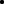 |
| \(\begin{bmatrix} 2 & -1 \\-1 & 2 \end{bmatrix}\) | 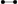 |
| \(\begin{bmatrix} 2 & -1 \\-2 & 2 \end{bmatrix}\) | 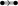 |
| \(\begin{bmatrix} 2 & -1 \\-3 & 2 \end{bmatrix}\) | |
An edge indicates two arrows that are not orthogonal. The double and triple edges indicate
that one root is longer, and they point to the shorter root.
Extended Cartan matrices gives an extended Dynkin diagram, where we mark the
highest root as special. In the case of \(A_1\) the extended Cartan matrix consists of all \(2\)s, so it is
exceptional, and we denote it by 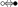 .
Example 6.6.1 (Extended Dynkin Diagrams). Here is a list of the extended Dynkin
diagrams of the thus-far constructed root systems. We will soon see that this list is
complete.
| \(A_1\) | 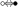 |
| \(A_n\) |  |
| \(B_n\) | 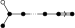
|
| \(C_n\) | 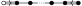 |
| \(D_n\) | 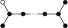
|
| \(E_6\) | 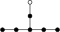 |
| \(E_7\) | 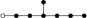 |
| \(E_8\) | 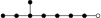 |
| \(F_4\) | 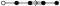 |
| \(G_2\) |  |
Now let’s see why these are as above. We will always choose \(f\) so the \(e_i\) are positive and \(e_i\) is
much larger than \(e_{i+1}\).
- \(A_n\):, The roots are \(e_i-e_j\) (we drop the \((-)^*\) in the notation). Then the simple roots are \(e_i-e_{i+1}\),
and the largest root is \(e_1-e_n\).
- \(B_n\): The roots are \(\pm (e_i +e_j),e_i - e_j, \pm e_i\). Then the simple roots are \(e_n, e_{i}-e_{i+1}\), and the largest root is \(e_1+e_2\).
- \(C_n\): The roots are \(\pm (e_i+e_j),e_i-e_j, 2e_i\). The simple roots are \(2e_n, e_{i}-e_{i+1}\), and the largest root is \(2e_1\).
- \(D_n\): The roots are \(\pm (e_i+e_j), e_i-e_j\). The simple roots are \(e_i-e_{i+1}, e_n+e_{n-1}\) and the largest root is \(e_1+e_2\)
- \(E_8\): The roots are \(\pm (e_i+e_j), e_i - e_j\) and things of the form \(\frac{1}{2}(e_1\pm \dots e_8)\) where there are an even number of
minus signs. The simple roots are then \(e_i-e_{i+1}\) for \(i>1\), \(e_8+e_7, \frac 1 2 (e_1+e_8-\sum _2^6 e_i)\), and the largest root is \(e_1+e_2\).
- \(E_7\): The roots are \(e_i-e_j, i \neq j\) and things of the form \(\frac{1}{2}(e_1\pm \dots e_8)\) where the number of minus signs is
divisible by four. The simple roots are then \(e_i-e_j\) for \(i>1\) and \(\frac 1 2 (\sum _{1,6,7,8} e_i - \sum _{2,3,4,5}e_i)\), and the largest root is
\(e_1+e_2\).
- \(E_6\): The roots are \(e_i-e_j\) such that if either of \(\{i,j\}\cap \{7,8\}\) is \(\{7,8\}\) or \(\phi \), as well as things of the form
\(\frac{1}{2}(e_1\pm \dots e_8)\) where the number of minus signs is divisible by four, \(e_7,e_8\) have opposite signs.
The simple roots are \(e_i-e_{i+1}\) for \(i \neq 1,7\) and \(\frac 1 2 (\sum _{1,5,6,8}e_i-\sum _{2,3,4,7}e_j)\) and the largest root is \(e_1-e_2\).
- \(F_4\): The roots are \(\pm e_i, \pm (e_i + e_j), e_i-e_j, \pm \frac 1 2 (e_1\pm \dots e_4)\). The simple roots are \(\frac{1}{2} (e_1-e_2-e_3-e_4), e_4,e_2-e_3,e_3-e_4\), and the largest root is \(e_1+e_2\).
- \(G_2\): The roots are \(\pm (e_i + e_j), e_i - e_j, \pm (2e_i-e_j-e_k)\). The simple roots are \(e_2-e_3, e_1-2e_2+e_3\), and the largest root is \(2e_1-e_2-e_3\).
Theorem 6.7. The examples contain a complete list of indecomposable Cartan
matrices.
Proof. Every subdiagram of a Dynkin diagram is a Dynkin diagram. Moreover, any
extended Dynkin diagram is not a Dynkin diagram. Finally, for any multiple edge
on a vertex of degree \(1\) on a Dynkin diagram, reversing an isolated set of multiple
edges preserves being a Dynkin diagram since it preserves determinants of principle
submatrices. Reducing an edge’s multiplicity preserves being a Dynkin diagram
since it increases the determinant of the principal submatrices. These observations
essentially prove the theorem. Namely, the extended Dynkin diagrams constructed
obstruct any other Dynkin diagrams from existing via these observations.
To actually work this out, \(A_n\) obstructs cycles from existing, so all Dynkin diagrams
are trees. \(G_2\) obstructs triple edges from existing anywhere else, \(F_4\) obstructs double
edges from appearing not on a leaf. \(C_n\) obstructs double edges from appearing multiple
times elsewhere, \(B_n\) obstructs branching when there is a double edge. \(D_n\) obstructs double
branching, and \(E_6,E_7,E_8\) obstruct branches from getting too long. □
Observe that the list is a bit redundant. Namely, \(A_1=B_1=C_1\), \(D_2 = A_1 \oplus A_1\), \(B_2 = C_2\), \(D_3 = A_3\), but the rest are not redundant.
Sometimes these are called exceptional isomorphisms.
We will now show that this classification also classifies simple Lie algebras and
indecomposable root systems as well. First we will show nothing depends on \(f\), and that we
can recover the root system from the Cartan matrix.
There is another way of thinking about root systems. Namely, reflection across the
orthogonal plane to \(a\) is given by the equation \(r_a(v) = v-\langle a|v\rangle a\). One then sees from the string
condition that \(\Delta \) is closed under reflection by any element in it (this condition is
actually equivalent to it by checking what happens in dimension \(2\)). For the root
system of a Lie algebra, one can see the reflection arising from the action of
the element \(\tau \) of the \(\msl _2\)-triple associated to the root. The group generated by \(r_\alpha , \alpha \in \Delta \) is
called the Weyl group and denoted \(W(\Delta )\). It is finite since it acts faithfully on \(\Delta \).
The fact that there are so many symmetries already suggests \(f\) doesn’t really do
much.
If \(\gamma _1,\dots ,\gamma _r\) are the simple roots, let \(s_i = r_{\gamma _i}\); these are called simple reflections. Define the height of a
positive root \(\alpha \) to be \(\hgt (\alpha ) = \sum _i c_i\) where \(\alpha = \sum _i c_i \gamma _i\).
Theorem 6.8.
-
(1)
- \(s_i\) preserves \(\Delta _+-\gamma _i\).
-
(2)
- If \(\alpha \in \Delta _+-\Pi \), there is an \(i\) so that \(\hgt (s_i(\alpha )) < \hgt (\alpha )\).
-
(3)
- There is a sequence of simple reflections taking any positive root to an element
of \(\Pi \) such that at every step it is still positive.
-
(4)
- \(W\) is generated by simple reflections.
Proof. \((1)\): Such an element looks like \(\sum _jc_j \gamma _j\) where \(c_j > 0\) for some \(j \neq i\). \(\gamma _j\) are linearly independent and
everything is either a strictly positive or negative linear combination of them, so the
result follows.
\((2)\): \((\alpha ,\alpha )>0\), and \(\alpha \) is a positive sum of \(\gamma _i\)s so \((\alpha ,\gamma _i)>0\) for some \(i\). Then \(s_i(\alpha )\) has smaller height.
\((3)\): Follows immediately from \((2)\).
\((4)\): By \((3)\) we can get between from element of \(\Delta \) and an element \(\gamma _i\) of \(\Pi \) via simple reflections.
Now conjugating \(s_i\) by this composite of simple reflections gives the reflection by that
element. □
We can consider \(V-\cup _{\alpha \in \Delta }T_\alpha \) where \(T_\alpha \) is the plane perpendicular to \(\alpha \). The components of this
are called the Weyl chambers. The Weyl group acts on these chambers since
\(r_\alpha (T_\beta ) = T_{r_\alpha (\beta )}\).
Lemma 6.9. \(x\) such that \((x,\gamma )>0\) for any \(\gamma \in \Delta \) form a chamber.
Proof. Since anything is a positive or negative learn combination of \(\Pi \), the set described
doesn’t contain anything orthogonal to anything in \(\Delta \). Moreover its boundary clearly
consists of things that do. □
A word in the \(s_i\) is reduced if it isn’t equivalent to a shorter word in \(W\). The length of a
reduced work representing \(w \in W\) is called its length, denoted \(l\).
Lemma 6.10 (Exchange Lemma). Suppose that \(s_{i_1}\dots s_{i_{t-1}}(\gamma _{i_t}) \in \Delta _-\). Then \(s_{i_1}\dots s_{i_t}\) isn’t reduced. In fact, it is equal
to \(s_{i_1}\dots s_{i_{m-1}}s_{i_{m+1}}\dots s_{i_{t-1}}\) for some \(m\).
Proof. The sequence \(\beta _k = s_{i_k}\dots s_{i_{t-1}}(\gamma _{i_t})\) at some point switches from negative to positive, which can
only happen by the previous theorem if \(\beta _{m+1}\) is \(\gamma _{i_m}\). But then \(w=s_{i_{m+1}}\dots s_{i_{t-1}}\) satisfies \(ws_{i_t}w^{-1} = s_{i_m}\) which gives the result
after multiplying by \(w\) on the right. □
Theorem 6.11. \(W\) acts simply and transitively on chambers, and on possible sets of simple
roots.
Proof. To see it acts transitively on chambers, make a generic path between two
chambers and everytime you cross a wall, do a reflection. By realizing the reflections
on \(f\) and on \(\Pi \), we see that the chambers correspond to sets of simple roots for various
choices of \(f\). To see that the action is simple, suppose that \(w\in W\) fixes \(\Pi \). If \(w = s_{i_1}\dots s_{i_{t}}\), then the exchange
lemma shows it isn’t reduced. Thus \(w\) must be trivial. □
Corollary 6.12. The Cartan matrix is not dependent on \(f\) and one can recover the root
system from the Cartan matrix. In fact there is a bijection between indecomposable Cartan
matrices and root systems.
Proof. The Cartan matrix essentially encodes the inner product on \(\Pi \) which form
a basis for the vector space. Thus we can recover these vectors, but by using the
reflections by these vectors, we can recover everything. To see this always gives a
root system, note that finiteness follows from everything lying on a lattice and being
bounded. Most of the conditions are easy, and since it is closed under reflections of
the generators and generated by them, it is closed under reflections of all elements.
□
Example 6.12.1. \(A_n\) has Weyl group \(S_{n+1}\) coming from the permutations of the \(e_i\).
Recall \(\mg \) semisimple is \(\mh \oplus \bigoplus _{\alpha \in \Delta }\mg _{\alpha } = \mg \oplus \mn _+ \oplus \mn _- \). where \(\mn _+,\mn _-\) are the nilpotent subalgebra of positive/negative root
spaces. We would like to find a description in terms of the Cartan matrix \(A_{ij}\). Let \(\gamma _1\dots \gamma _r\) be the
simple roots, and let \(e_i,f_i,h_i\) be \(\msl _2\)-triples corresponding to \(\gamma _i\). Note that they generate the algebra,
are linearly independent, and satisfy the following relations called the Chevalley
relations:
-
(1)
- \([h_i,h_j]=0\)
-
(2)
- \([h_i,e_j]=\langle \gamma _i|\gamma _j\rangle e_i\)
-
(3)
- \([h_i,f_j]= -\langle \gamma _i|\gamma _j\rangle f_i\)
-
(4)
- \([e_i,f_j]= \delta _{ij}h_i\)
Note that these relations come from entries in the Cartan matrix: namely \(\langle \gamma _i|\gamma _j\rangle \)
is \(A_{ij}\). Let \(\tilde{\mg }\) denote the free Lie algebra presented by these relations. Let \(\tilde{\mn }_+,\tilde{\mn }_-\) denote
the subalgebras generated by \(e_i\) and \(f_i\) respectively. When the Cartan matrix was
constructed from a Lie algebra, there is a natural surjective map to \(\tilde{\mg } \to \mg \). Note that the
construction is symmetric in the \(f_i,e_i\): we can swap the two and replace \(h_i\) with its negative
and the same relations hold. This means we have to prove half as many things
about the construction. We will still use \(\gamma _i \in \Pi \) to denote the weights of the span of \(\ad (h_i)\) on
\(e_i\).
Consider the \(T(V)\) the tensor algebra on the vector space \(V\) generated by \(v_1,\dots , v_r\). This should be
thought of as the universal enveloping algebra of \(\tilde{\mg }/(\tilde{\mn }_+\oplus \mh )\). Of course this doesn’t make sense since
the quotient isn’t by an ideal, but it is the quotient as an algebra and can probably be
thought of as the invariant differential operators on the quotient formal group. We can
produce an action of \(\tilde{\mg }\) on \(T(V)\) as follows: \(h_k\) sends \(v_{i_1}\dots v_{i_s}\) to \(-(\sum _1^sA_{k,i_j}\rangle ) v_{i_1}\dots v_{i_s}\), \(f_k\) sends \(v_{i_1}\dots v_{i_s}\) to \(v_k v_{i_1}\dots v_{i_s}\), and \(e_k\) sends \(v_{i_1}\dots v_{i_s}\) to \(\sum _1^s (\delta _{k,i_j}v_{i_1}\dots \hat{v_{i_j}}\dots v_{i_s})\). A
straightforward calculation shows that this satisfies the Chevalley relations, so is indeed an
action.
For the next lemma, it will be convenient to introduce notation. \(e(s),f(s)\) denote an iterated
bracket of \(s\) of the \(e_i,f_i\) respectively, and \(\Sigma \) to denote a linear combination. \(f(0)\) or \(e(0)\) will mean the
\(h_i\).
Lemma 6.13.
-
(1)
- \(\tilde{\mg } = \tilde{\mn }_+\oplus \tilde{\mn }_-\oplus{\mh }\)
-
(2)
- \(\mn _+,\mn _-\) are free on the \(e_i,f_i\) and \(\tilde{\mn }_+ = \oplus _{\alpha \in \QQ _+} \mg _\alpha , \tilde{\mn }_- = \oplus _{\alpha \in \QQ _+} \mg _{-\alpha }\) where \(\QQ _+\) is \(\ZZ _{\geq 0} \Pi -0\) and \(\alpha \) is the weights of the \(\mh \) action.
-
(3)
- If \(I\) is an ideal in \(\tilde{\mg }\) then \(I = \mh \cap I \oplus \bigoplus _\alpha \mg _\alpha \cap I\).
-
(4)
- Maximal ideals in \(\tilde{\mg }\) correspond to components of the Dynkin diagram.
Proof. \((1)\): The action on \(T(V)\) gives a Lie algebra homomorphism \(\tilde{\mg } \to T(V)\). First note that the \(h_i\)
are linearly independent since the Cartan matrix is nonsingular. The Jacobi identity
(equivalent to the fact that \(\ad \) is a derivation) \([h,e(s)]=[h,[e(1),e(s-1)]] = [[h,e(1)],e(s)]+[e(1),[h,e(s-1)]]\) shows via induction on \(s\) that for an
iterated bracket of \(e_{i_1},\dots , e_{i_s}\) that \(\ad h_k\) has eigenvalue \(\sum _1^sA_{k,i_j}\), and by symmetry the same is true for \(f_i\)
with the opposite eigenvalue.
Next we can see inductively that \([f(s),e(s')]\) is a linear combination of \([f(s-s')]\) when \(s\geq s'\geq 0\) via \([f(s),e(s')] = [f(s),[e(s'-1),e(1)]] = [[f(s),e(s'-1)],e(1)]+[e(s'-1),[f(s),e(1)]]\) reducing to
\(s'=1\) and \([f(s),e(1)] = [[f(s-1),f(1)],e(1)] = [[f(s-1),e(1)],f(1)]+ [f(s-1),[f(1),e(1)]]\) reducing to \(s=1\), where it follows from relation \((4)\). The same statement holds when \(e,f\)
are switched.
Thus \(\tilde{\mn }_+ + \tilde{\mn }_- + \mh \) is a subalgebra, but it isn’t clear that the sum is direct. However, by
nondegeneracy we can find \(h \in \mh \) such that its eigenvalue on \(e(s)\) is positive, and hence on \(f(s)\) is
negative. Moreover \([\mh ,\mh ]=0\) so the eigenspace decomposition of \(h\) separates these subalgebras.
\((2)\): There is a commutative square
where the left vertical map is the canonical action on the universal enveloping algebra.
Since the left arrow is injective and the bottom arrow is an isomorphism, the top
arrow is injective. But it is also clearly surjective, so it is an isomorphism. Thus \( \tilde{\mn }_+ \)
is free and by symmetry \( \tilde{\mn }_- \) is too. The second statement was already proven in
\((1)\).
\((3)\): Given an element \(x \in I\), keep acting by the elements of \(\mh \). Since \(\mh \) acts semisimply, some
linear combination of the \(\ad (\mh )^i x\) will be the projection onto the various eigenspaces of
\(x\).
\((4)\): Consider any proper ideal of \(\tilde{\mg }\). By \((3)\) if its intersection with \(\mh \) wasn’t \(0\), it would have to
contain all nonzero weight spaces of its intersection in \(\mh \), which would contain atleast one \(f_i,e_i\).
Thus it would contain \([e_i,f_i]=h_i\), for which the eigenvalue doesn’t vanish for all neighbors of \(\gamma _i\).
Continuing this way since it is indecomposable, it would have to contain the whole
component. Thus the union of all ideals containing the part of \(\mh \) orthogonal to some
component of a Dynkin diagram is a maximal ideal, and moreover all maximal ideals must
be contained in one of these. □
If the Cartan matrix is indecomposable, there is a unique maximal ideal, and if we
already know that the Cartan matrix comes from a simple Lie algebra, the quotient has to
be that simple Lie algebra. The only information this really gives us is knowing the
quotient is finite-dimensional. However we will now prove that we should apriori expect
the quotient to be finite dimensional.
Theorem 6.14. Consider the intersection of all the maximal ideals of \(\tilde{\mg }\). The quotient by
this is a semisimple Lie algebra, whose Cartan subalgebra and root system are exactly the
ones used to construct it.
Proof. We can make a reduction to the case of an indecomposable Cartan matrix by
observing that a splitting of the Cartan matrix splits everything involved \(\mh ,\tilde{\mg },\tilde{\mn _+},\tilde{\mn _-}\). In this
case when it is simple, if we can find a proper ideal with quotient finite dimensions
\(>1\), then the quotient is simple, and \(\mh \) is clearly self normalizing with \(\mg _{\alpha }\) are its weight
spaces, so we would be done. The quotient contains cannot be \(1\)-dimensional since if
an ideal contains any of the \(e_i,f_i,h_i\), it must contain everything.
To prove finite-dimensionality, we first prove that when \(i\neq j\) and \(k\) is arbitrary, \(\ad e_k (\ad f_i)^{1-A_{ij}}(f_j)=0\). If \(k\neq i\),
this is equal to \( (\ad f_i)^{1-A_{ij}}\ad e_k(f_j) = (\ad f_i)^{1-A_{ij}}\delta _{jk} h_j = (\ad f_i)^{-A_{ij}}A_{ij}f_i = 0\). If \(k = i\), \(e_i,f_i\) are part of an \(\msl _2\)-triple, so it follows from representation theory
of \(\msl _2\) that \(\ad e_i (\ad f_i)^{t}(f_j)= t(A_{ik}-t+1)(\ad f_i)^{t-1}(f_j) = 0\) by our choice of \(t\).
Now let \(J_+,J_-\) be the ideals of \(\tilde{\mn }_+,\tilde{\mn }_-\) generated by \((\ad f_i)^{1-A_{ij}}(f_j)\) and \((\ad e_i)^{1-A_{ij}}(e_j)\). By what was just shown, these are
also ideals of \(\tilde{\mg }\). Let \(J\) be their sum. I claim \(\tilde{\mg }/J\) is finite dimensional. Note that \(\ad e_i,\ad f_i\) act locally
nilpotently on this, since they do on generators and \(\ad \) is a derivation. Now we still
have for each \(i\) the \(\msl _2\)-triple associated to \(e_i,f_i,h_i\). Then \(\tilde{\mg }/J\) is a sum of finite-dimensional modules
for these \(\msl _2\)-triples since the \(e_i,f_i\) act locally nilpotently.
Thus we can consider the action of \(\tau _i\) from the representation theory of \(\msl _2\) which is
an involution swapping positive and negative eigenspaces, implementing the Weyl
group reflection of the corresponding simple root on \(\ZZ \Pi \). We know that \(\tilde{\mg }_{k\gamma _i}\) is \(1\)-dimensional
for \(k = \pm 1\) and \(0\)-dimensional for \(|k|>1\) so the same is true for anything connected to these by the
Weyl group action. In particular all the roots of the corresponding root space have
\(1\)-dimensional eigenspaces. Now consider \(\alpha \) in \(\QQ _+\coprod -\QQ _+\) that is not a multiple of a root. then the
plane orthogonal to \(\alpha \) isn’t contained in any of the boundaries of the Weyl chambers,
and we can find \(\mu \in \ZZ \Pi \) orthogonal to it on the interior of a Weyl chamber. Then acting by
an element of the Weyl group \(w\) we can move \(\mu \) to the Weyl chamber corresponding to
\(\Pi \). Then \(w(\mu )\) is a sum of positive multiples of the \(\gamma _i\) and since it is orthogonal to \(w(\alpha )\), \(w(\alpha )\) must
contain both positive and negative terms in its decomposition as \(\sum _i c_i \gamma _i\). But then \(0=\tilde{\mg }_{w(\alpha )} \cong \tilde{\mg }_{\alpha }\). Thus
the quotient is finite-dimensional, and in fact we have proven \(J\) is the maximal ideal.
□
7. Homological Methods
Lets expand on homological methods, which were first mentioned in the proof of
Weyl’s theorem that a semisimple Lie algebra has semisimple finite dimensional
representations.
Usually \(\Ext \) and \(\Tor \) are the main tools of studying representations of algebras but
for a Hopf algebra, we can do with a bit less. First observe that the antipode
makes left and right modules canonically equivalent, so we can drop the lefts and
rights.
Definition 7.1. \(H_*(\mg ,M)\) is \(\Tor _*^{U(\mg )}(k,M)\), \(H^*(\mg ,M)\) is \(\Ext ^*_{U(\mg )}(k,M)\).
In otherwords, \(H_*\), the homology, is the left derived functors of the coinvariants and \(H^*\),
cohomology, is the right derived functors of invariants. The \(\mg \) will be dropped if
unambiguous. The homology, cohomology should be thought of as sheaf cohomology on
the associated Lie group (the sheaf being trivial for the module \(k\)). When the module is \(k\)
itself, we can also refer to it as cohomology and homology of the Lie algebra. \(M\) should
correspond to a right invariant trivial vector bundle such that differentiating the \(\Ad \)
action gives the actiono of \(\mg \) on the fibre. Indeed this construction coincides with
the construction of \(\ad \). The reason these are well equipped to replace \(\Ext \) and \(\Tor \) is the
following:
Proposition 7.2. \(\Ext ^*(M,N) = H^*(\Hom (M,N))\), \(\Tor ^*(M,N) = H_*(\Hom (M,N)))\).
Proof. \(\Hom _{\mg }(M,N) \cong \Hom _{\mg }(k,\Hom (M,N))\). Take right derived functors in \(N\). On the right hand side, \(\Hom (M,-)\) is exact and sends
injectives to injectives by the tensor hom adjunction since tensor products are exact,
so the edge homomorphism in the Grothendieck spectral sequence is an isomorphism.
The same argument works for \(\Tor \) since \(M\otimes _{\mg } N \cong k \otimes _{\mg } (M \otimes N)\). □
Since \(U(\mg ) \otimes _k U(\mg ')\) = \(U(\mg \oplus \mg ')\) we get Kunneth isomorphisms: \[\bigoplus _{p+q=n} H_p(\mg ,k)\otimes H_p(\mg ',k) = H_n(\mg \oplus \mg ',k)\]\[\bigoplus _{p+q=n} H^p(\mg ,k)\otimes H^p(\mg ',k) =H^n(\mg \oplus \mg ',k)\]
Using the diagonal \(\mg \to \mg \oplus \mg \) we get a coalgebra structure and an algebra structure on the
homology and cohomology of \(\mg \).
\(H_1,H^1\) are easy to interpret. Let \(J\) denote the augementation ideal of \(U(\mg )\).
Lemma 7.3. \(H_1(k) = \mg /[\mg ,\mg ]\)
Proof. \(0 \to J \to U(\mg ) \to k \to 0\), so taking the long exact sequence in homology, we get \(H_1(k) = H_0(J) = \mg /[\mg ,\mg ]\). □
Lemma 7.4. \(H^1(M) = \Der (M)/\Ider (M)\)
Proof. Again look at the long exact sequence for \(0 \to J \to U(\mg ) \to k \to 0\) after taking \(\Hom \) into \(M\). We get \(0 \to \Hom (k,M) \to \Hom (U(\mg ),M) \to \Hom (J,M) \to H^1(M) \to 0\). \(\Hom (J,M)\) is the
derivations, and the image of \(\Hom (U(\mg )),M\) is the inner derivations. □
If \(M\) is trivial, then \(\Ider (M)\) is trivial, and \(\Der (M)\) is \(\Hom _{\Lie }(\mg ,M)\). Suppose we have a short exact sequence \(0 \to \mh \to \mg \to \mg /\mh \to 0\). The
forgerful functor from \(\mg /\mh \) modules to \(\mg \) modules has left adjoint \(\mh \)-coinvariants and right
adjoint \(\mh \)-invariants. Taking \(\mg \)-invariants is the composite of taking \(\mh \)-invariants and
then taking \(\mg /\mh \)-invariants, and similarly for coinvariants so we get Grothendieck
spectral sequences: \[E_2^{p,q} = H^p(\mg /\mh ,H^q(\mh ,M)) \Rightarrow H^{p+q}(\mg , M) \] \[E_{p,q}^2 = H_p(\mg /\mh ,H_q(\mh ,M)) \Rightarrow H_{p+q}(\mg , M) \] These are also called the Hochschild-Serre spectral
sequences.
\(H^2(M)\) has a simple interpretation: it is extensions of \(\mg \) by the abelian Lie algebra
\(M\).
Theorem 7.5. \(\Ext (\mg ,M) = H^2(\mg ,M)\).
Given an extension \(0 \to M \to \me \to \mg \to 0\), we can look at low dimenisonal exact sequence of the spectral
sequence in cohomology: \[0 \to H^1(\mg ,M) \to H^1(\me ,M) \to H^1(M,M)^{\mg } \to H^2(\mg ,M) \to H^2(\me ,M)\] The image of the identity in \(H^1(M,M)^{\mg } = \Hom _{\mg }(M,M)\) is the class corresponding to the
extension. This gives a map \(\Ext (\mg ,M) \xrightarrow{d^2} H^2(\mg ,M)\). To go in the other direction, we can use a presentation of
\(\mg \).
Lemma 7.6. For a free Lie algebra on the set \(X\), \(J\) is a free module on the set \(X\). Thus \(H^i(M),H_i(M) = 0\) for
\(i>1\).
Proof. This is because it is the augmentation ideal of a tensor algebra. □
Now consider a presentation \(0 \to \ma \to \mff \to \mg \to 0\), where \(\mff \) is free, and mod out by the ideal generated by \([\ma ,\ma ]\) so
that it is an extension of \(\mg \) by \(\mg _{ab}\) which is abelian. This is actually the unversal extension in
that \(\Hom (\ma _{ab}, M) = H^2(\mg ,M)\) classifies extensions by \(M\).
Given any extension \(\me \), we can form the diagram below since \(\mff \) is free and \(M\) is abelian:
Now the map producing the class in \(H^2\) corresponding to \(\me \) factors as \[\Hom _{\mg }(M,M) \to \Hom _{\mg }(\ma _{ab}, M) = H^1(\ma _{ab},M)^{\mg } \xrightarrow{d^2} H^2(\mg ,M)\]
By naturality the extension class in \(H^2(\mg ,\ma _{ab})\) gets sent to the corresponding class in \(H^2(\mg ,M)\). Since \(H^2(\mff ,M)\)
vanishes, the restriction of any class in \(H^2(\mg ,M)\) to \(\mff \) vanishes. From the low-dimensional exact
sequence, this means that there is an element of \(H^1(\ma ,M)^\mg = \Hom _{\mg }(\ma _{ab},M)\) lifting \(H^2(\mg ,M)\). One can then from the semidirect
product \(M\ltimes \mff \) over \(\ma \) to get an extension of \(\mg \) by \(M\) realizing the class.
It suffices to show that the cohomology class determines the extension. But suppose
there were two extensions \(\me _1,\me _2\) coming from the same class. They are classified by some maps \(\phi _1,\phi _2 \in H^1(\ma _{ab},M)^{\mg }\).
By assumption their image via \(d^2\) is the same, so there is some element in \(H^1(\mff /[a,a],M)=\Der (\mff ,M)\) whose image is \(\phi _1-\phi _2\).
WLOG, the map \(\mff \to \me _1,\me _2\) is surjective, and it is then easy to see that \(\phi _2+(\phi _1-\phi _2)\) descends to an isomorphism
of extensions from \(\me _1\) to \(\me _2\).
Corollary 7.7. If \(H^2(\mg ,M)\) vanishes for all \(M\), then \(\mg \) is free.
Proof. Choose a presentation \(\mg =\mff /\ma \) that is minimal in the sense that \(\ma \subset [\mff ,\mff ]\). Mod out by \([\mff ,\ma ]\) to see
that \(\mff /[\mff ,\ma ] = \mg \oplus \ma /[\mff ,\ma ]\) since extensions by abelian things are trivial. But \(f\) is minimal, so taking the
commutator of that equation, we see \(\ma /[\mff ,\ma ]=0\), but any subalgebra of a free algebra satisfying
that is trivial. □
There is a canonical and efficient complex called the Chevalley-Eilenberg complex that
computes Lie algebra homology and cohomology. It is a free resolution of \(k\), and is
essentially the de Rham complex.
Consider the chain complex where \(V_n(\mg ) = U\mg \otimes _k \Lambda ^n\mg \), and \(d(g \otimes w_1 \dots \wedge w_n)= \sum _{i}(-1)^{i+1}ux_i \otimes w_1 \dots \wedge \hat{w_i} \dots \wedge w_n\) \(+ \sum _{i <j}(-1)^{i+j}u\otimes [w_i,w_j]\otimes w_1 \dots \wedge \hat{w_i} \dots \wedge \hat{w_j} \dots \wedge w_n\). There is an obvious augmentation
\(V_*(\mg ) \to k\).
Lemma 7.8. \(V_*(\mg )\) is a free resolution of \(k\).
Proof. There is a filtration on \(V_*\) coming from the tensor products of the filtrations on
\(U(\mg ),\Lambda ^*(\mg )\). The associated graded by PBW is \(k[\mg ]\otimes _k\Lambda ^*(\mg )\), and differential is the Koszul differential. Thus
the spectral sequence for the filtration degenerates at \(E^1\) to the expected cohomology.
□
Corollary 7.9. For an \(\mg \)-module \(M\), \[H_*(M) = H_*(M\otimes \Lambda ^*(\mg )), H^*(M) = H^*(\Hom (\Lambda ^*(\mg ),M)\]
This complex can give explicit proofs of the interpretations of \(H^1,H^2\).
Corollary 7.10. If \(\mg \) has dimension \(n\), its cohomological dimension is \(n\).
Proof. The Chevalley-Eilenberg complex shows it is at most \(n\). But it also shows that
\(H^n(\Lambda ^n\mg )= k \neq 0\). □
The Chevalley-Eilenberg complex for the Lie algebra of a Lie group can be used to show
that cohomology and homology of the Lie algebra agree with homology and
cohomology of a compact connected Lie group (over \(k\)). Namely, one can choose a
bi-invariant metric, and use Hodge theory to show the harmonic forms are invariant
and correspond to the cohomology of the Chevalley-Eilenberg complex. Using
this we can see why we should expect \(H^3(\msl _2)=k\), since \(\msl _2\CC \) is the complexification of the lie
algebra of \(\su (2)\), and \(\SU (2)\) is a \(3\)-sphere. Indeed, the Chevalley-Eilenberg complex verifies
this.
We already showed \(H^1(\mg ,M)\) vanishes for a semisimple Lie algebra, but the same is true for \(H^2\).
First we can upgrade Weyl’s theorem.
Proposition 7.11. Let \(M\) be a finite-dimensional nontrivial irreducible \(\mg \) module in
characteristic \(0\). Then \(H^i(\mg ,M) = H_i(\mg ,M)=0\) for any \(I\).
Proof. Over \(\bar{k}\), \(L\), the Casimir element, acts by a scalar on \(M\) and by \(0\) on \(k\), hence it acts on
the homology and cohomology, and the two actions coming from \(M\) and \(k\) coincide since
\(L\) is central. Thus a nonzero scalar is equal to zero, so the cohomology and homology
vanish. □
Thus all the interesting (finite-dimensional) cohomological information is in the trivial
sheaf.
Theorem 7.12 (Second Whitehead Lemma). If \(\mg \) is semisimple over characteristic \(0\) and \(M\) is
finite-dimensional, then \(H^2(\mg ,M)=0\).
Proof. By the previous proposition, it suffices to show \(H^2(\mg )\) vanishes, which is equivalent
to any saying any extension \(k \to \me \to \mg \) splits. To see that is true, simply observe that the \([\me ,\me ]\) gives
a splitting since \(k\) commutes with everything and \([\mg ,\mg ]= \mg \). □
This is analogous to (and partially proves) a fact in Lie groups, that \(\pi _2\) vanishes for any
Lie group. Perhaps one complete the proof for compact Lie groups by proving that \(H_2\) is the
kernel of the universal central extension, so there can’t be any torsion as it would give a
nontrivial cover.
Corollary 7.13 (Levi Decomposition). In characteristic \(0\), any Lie group splits as a
semidirect product \(\ma \ltimes \mg \) where \(\ma \) is solvable and \(\mg \) is semisimple.
Proof. Note that \(\ma \) is really the radical, so we want to show that \(\rad (\mg ) \to \mg \to \mg /\rad (\mg )\) splits. We can do
this by induction on the length of the derived series. Mod out by \([\rad (\mg ),\rad (\mg )]\) to get an extension
by an abelian Lie algebra, for which there is a splitting by the second Whitehead
lemma. The preimage of this splitting is an ideal \(\mh \) such that there is an extension \([\ma ,\ma ] \to \mh \to \mg \),
at which point we can induct. □
Lemma 7.14 (Hopf). Let \(\mff /\ma \) be a presentation of \(\mg \). Then \(H_2(\mg ) = \frac{\ma \cap [\mff ,\mff ]}{[\mff ,\ma ]}\).
Proof. Consider the low term exact sequence from the homology spectral sequence
for \(0 \to \ma \to \mff \to \mg \to 0\) and the trivial module: \[0 \to H_2(\mg ,k) \to \ma /[\ma ,\ma ]_\mg \to \mff /[\mff ,\mff ] \to \mg /[\mg ,\mg ] \to 0\] The second term is \(\ma /[\mff ,\ma ]\), giving the result. □
Lemma 7.15. If \(\me ,\me '\) are central extensions of \(\mg \), and \(\me \) is perfect there is at most one
homomorphism of extensions \(\me \to \me '\).
Proof. Any two homomorphisms differ by something in the kernel of \(\me \), and \(\me '\) is perfect
and the kernel is central, it has to be \(0\). □
Theorem 7.16. \(\mg \) has a universal central extension iff \(\mg \) is perfect, and it is a central
extension by \(H_2(\mg ,k)\).
Proof. Suppose \(\mg \) has a universal central extension \(\me \), it must have a unique map to the
trivial central extension, which implies that \(\mg \) has to be perfect. Conversely let \(\mg \) be
perfect. Choose a presentation \(\mg = \mff /\ma \), for \(\mff \) free. Then \(\mh = [\mff ,\mff ]/[\mff ,\ma ]\) will be shown to be the universal
central extension. By the previous lemma, it is an extension by \(H_2(\mg )\). Moreover, one can
see it is perfect. Since \(\mg \) is perfect, any \(x \in \mff \) decomposes as \(x'+r\) where \(x' \in \mff , r \in \ma \). Then choosing such a
decomposition for \(x =x'+r,y =x'+r\) Then \([x,y] = [x',y']\) modulo \([\mff ,\ma ]\). This gives uniqueness of a map to any extension.
Now let \(\me \) be any other central extension. There is a map from \(\mff \) to \(\me \) lifting the
projection to \(\mg \), and since \(\me \) is central, it induces a map from \(\mh \). □
Here is a recognition criterion for universal central extensions.
Lemma 7.17. TFAE for a central extension \(\me \to \mg \):
-
(1)
- \(\me \) is a universal central extension.
-
(2)
- Any central extension of \(\me \) splits in a unique way.
-
(3)
- \(H_1(\me )=H_2(\me ) = 0\).
Moreover the universal central extension is idempotent.
Proof. Consider \(\me '\), the universal central extension of the universal central extension,
and let \(x\) be in its kernel to \(\mg \). Since \(\me '\) is perfect, for any \(a\), there is some \(a',a''\) so that \([x,a] = [x,[a',a']]\). But
by the Jacobi identity this is zero since \(\me ',\me \) are central extensions. Thus \(\me '\) is a central
extension so it splits, and must be \(\me \).
\((1) \implies (2)\): Any central extension \(\me '\) of \(\me \) splits. \(\me '\) is thus also a central extension of \(\mg \) and since \(\me \)
is perfect, this splitting is unique by Lemma 7.15.
\((2) \implies (3)\): Since the a trivial \(k\) extension splits in a unique way, we see \(H_1(\me )=0\). Moreover since any
extension splits, the universal central extension splits, so it must be trivial, showing
\(H_2(\me )=0\).
\((3) \implies (1)\): Given any central extension of \(\mg \), we can pull it back to a central extension of \(\me \) which
splits, giving a map to the central extension. Uniqueness follows from perfectness. □
8. To add
Affine Kac-Moody algebras Representation theory/Character formulas More on Cartan
subalgebras Malcev theorem Ado’s theorem